VMware Cloud Foundation:
Solution Architecture & Design [v9.0]
Instructor-Led Course · Arabic Narrative · English Technical Terms
دَورة شامِلة لِـ Solution Architects الَّذين يُصَمِّمون حُلول السَّحابة الخاصّة باستِخدام
TOGAF · Zachman · AMPRS ·
VCF Components · Fleet Design · Networking & Storage.
مُقَدِّمة الدَّورة والأَهداف
مَرحَباً بِك في دَورة VCF 9.0 Solution Architecture & Design. هَذِه الدَّورة تُؤَهِّلُك لِتَصميم حُلول السَّحابة الخاصّة باستِخدام VMware Cloud Foundation مِن المَنظور المِعماري والاستِراتيجي.
🎯 أَهداف هَذا الجُزء
- التَّعَرُّف على هَيكَل الدَّورة وَمَحاوِرها الأَساسيّة
- فَهم الجُمهور المُستَهدَف وَالمُتَطَلَّبات المُسبَقة
- اِستِعراض خَريطة الطَّريق مِن الأُسُس إِلى التَّصميم التَّفصيلي
- التَّعَرُّف على المَصادِر الرَّسميّة وَالمَراجِع المُعتَمَدة
عَن هَذِه الدَّورة
دَورة VMware Cloud Foundation: Solution Architecture & Design [V9.0] (الكود الرَّسمي: EDU-EN-VCFSAD9) هي دَورة مُتَقَدِّمة مِن Broadcom / VMware Education مُصَمَّمة لِلمِعماريين الَّذين يَرغَبون في تَصميم وَنَشر حُلول السَّحابة الخاصّة الحَديثة باستِخدام VMware Cloud Foundation 9.0.
الأُسُس المِعماريّة — Architecture Foundations
أُطُر العَمَل (TOGAF, Zachman)، مُتَطَلَّبات الأَعمال، عَمَلِيّة التَّصميم بِمُستَوَياتها الثَّلاثة (المَفهومي، المَنطِقي، الفيزيائي) وَمَعايير الجَودة AMPRS.
الرُّؤية والاستِراتيجيّة — Vision & Strategy
رُؤية السَّحابة الخاصّة الحَديثة (MPC)، رِحلة هَندَسة الحالة المُستَقبَليّة (FSA)، تَقييم النُّضج، نَماذِج التَّشغيل.
هَندَسة VCF — VCF Engineering
رَبط مُكَوِّنات VCF بِحالات الاستِخدام، الخِدمات المُتَقَدِّمة، تَصميم الأُسطول والشَّبَكات والتَّخزين ونِطاقات أَحمال العَمَل.
المُمارَسة والتَّطبيق — Practice & Application
دِراسة حالة شامِلة (Rainpole)، امتِحان تَجريبي مُوَقَّت (40 سُؤال)، وَرَقة مَرجَعيّة سَريعة.
الجُمهور المُستَهدَف
✅ مَن يَستَفيد؟
- Solution Architects — مِعماريو الحُلول في بيئات VMware
- Cloud Architects — مِعماريو السَّحابة الخاصّة والمُختَلَطة
- Infrastructure Leads — قادة فِرَق البنية التَّحتيّة
- Senior Engineers — المُهَندِسون المُتَقَدِّمون الَّذين يَتَحَوَّلون إِلى أَدوار مِعماريّة
- Consultants — المُستَشارون التِّقَنيّون لِمَشاريع التَّحَوُّل السَّحابي
📚 المُتَطَلَّبات المُسبَقة
- خِبرة عَمَلِيّة مَع
vSphereوvCenter - مَعرِفة أَساسيّة بِـ
NSXوvSAN - فَهم مَبادِئ الشَّبَكات والتَّخزين الافتِراضي
- يُفَضَّل إِتمام دَورة
VCF Foundationsأو ما يُعادِلها - فَهم أَساسيّات التَّصميم المِعماري
خَريطة الطَّريق — Course Roadmap
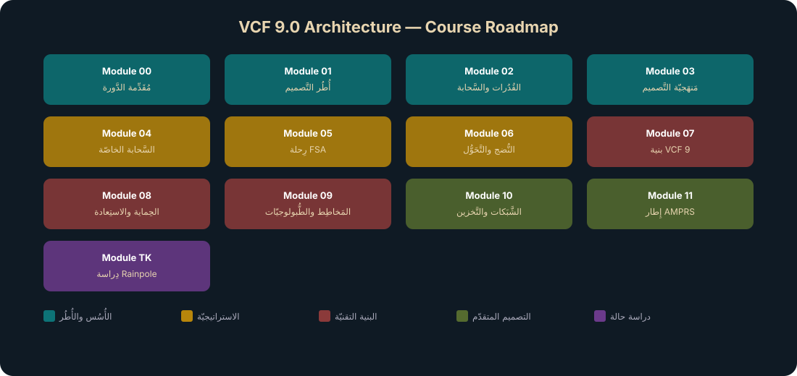
🔑 المَصادِر الرَّسميّة
EDU-EN-VCFSAD9-LEC— الكِتاب الرَّسمي لِلمُحاضَرات (810 صَفحة)ARC01_VCFAO9— عُروض المِعمار (Modules 1-4)RBF-ARCH-S1— مَواد Future State Architect (Modules 3-4)- وَثائِق
VMware Cloud Foundation 9.0الرَّسميّة
🚨 مَعلومة اِمتِحانيّة
هَذِه الدَّورة تُغَطّي المَحاوِر المِعماريّة المَطلوبة لِشَهادة VMware Cloud Foundation Architecture. الامتِحان التَّجريبي في نِهاية الدَّورة يُحاكي تَنسيق وَصُعوبة الامتِحان الحَقيقي.
✅ Knowledge Check — Module 00
Q1. What is the official Broadcom Education course code for this course?
Correct: B
The official code is EDU-EN-VCFSAD9 — VMware Cloud Foundation: Solution Architecture & Design [V9.0].
Q2. How many main pillars does this course have?
Correct: C
Four pillars: Architecture Foundations, Vision & Strategy, VCF Engineering, and Practice & Application.
Q3. Which of the following is NOT a recommended prerequisite for this course?
Correct: C
CCIE certification is not a prerequisite. Prerequisites include vSphere, NSX, vSAN experience, and basic architectural design understanding.
أُطُر العَمَل المِعماريّة ودَور المِعماري
اِفهَم أُطُر العَمَل المِعماريّة (TOGAF, Zachman) وَدَور المِعماري في تَصميم الحُلول وَكَيف تَتَكامَل مَراحِل التَّصميم.
🎯 أَهداف هَذا المودِيول
- وَصف أُطُر العَمَل المِعماريّة المُعتَمَدة (
TOGAF,Zachman) - شَرح مَراحِل
TOGAF ADMوَدَورة حَياة التَّصميم - تَوضيح مَصفوفة
Zachmanوَالعَلاقة بَين الأَبعاد - تَحديد دَور المِعماري وَالعَلاقة مَع أَصحاب المَصلَحة
- فَهم مَنهَجيّات التَّسليم —
WaterfallمُقابِلAgile
إِطار TOGAF — The Open Group Architecture Framework
TOGAF هُو إِطار عَمَل مِعماري مَفتوح المَصدَر يُوَفِّر مَنهَجيّة شامِلة لِتَصميم وَتَخطيط وَتَنفيذ وَحَوكَمة هَندَسة تِقنيّة المَعلومات على مُستَوى المُؤَسَّسة. طَوَّرَته The Open Group وَيُستَخدَم عالَمياً في أَكثَر مِن 80% مِن مَشاريع الهَندَسة المِعماريّة المُؤَسَّسيّة.
TOGAF يَتَكَوَّن مِن أَربَعة مَجالات مِعماريّة (Four Architecture Domains) مُتَرابِطة:
| المَجال | الوَصف | مِثال في سِياق VCF |
|---|---|---|
| Business Architecture | اِستِراتيجيّة الأَعمال، الحَوكَمة، التَّنظيم، العَمَلِيّات | تَحديد حالات الاستِخدام والأَهداف التِّجاريّة |
| Data Architecture | هَيكَل أُصول البَيانات المَنطِقيّة والفيزيائيّة | تَصميم سِياسات التَّخزين (SPBM) |
| Application Architecture | مَخطَطات التَّطبيقات الفَرديّة وَتَفاعُلاتها | خَدَمات Tanzu Platform و VCF Automation |
| Technology Architecture | القُدُرات البَرمَجيّة والأَجهِزة وَالشَّبَكات | طوبولوجيا Workload Domains و NSX |
مَراحِل TOGAF ADM — Architecture Development Method
مَنهَجيّة تَطوير الهَندَسة المِعماريّة (ADM) هي قَلب TOGAF — دَورة تَكراريّة مِن ثَماني مَراحِل + مَرحَلة تَمهيديّة:
تَحديد نِطاق العَمَل المِعماري، إِعداد الأَدَوات والمَبادِئ، تَشكيل الفَريق. في سِياق VCF: تَحديد نِطاق التَّحَوُّل السَّحابي وَتَشكيل فَريق المَشروع.
بِناء الرُّؤية المِعماريّة العامّة، تَحديد أَصحاب المَصلَحة (Stakeholders)، الحُصول على المُوافَقة. في سِياق VCF: تَحديد رُؤية Modern Private Cloud.
تَحليل وَتَصميم هَندَسة الأَعمال — العَمَلِيّات، الأَهداف، المُتَطَلَّبات التَّنظيميّة.
تَصميم هَندَسة البَيانات والتَّطبيقات — كَيف تَتَفاعَل الأَنظِمة مَع البَيانات.
تَصميم البنية التَّحتيّة التِّقنيّة. في سِياق VCF: تَصميم Workload Domains، NSX، vSAN، Fleet.
تَحديد الفُرَص وَالمَشاريع التَّحَوُّليّة، تَقييم البَدائِل، وَضع خَريطة الطَّريق.
وَضع خُطَط الهِجرة المُفَصَّلة مِن الحالة الحاليّة إِلى المُستَهدَفة.
الإِشراف على التَّنفيذ — ضَمان الالتِزام بِالتَّصميم المِعماري.
إِدارة التَّغييرات المُستَمِرّة وَالتَّحسين الدَّوري. في VCF: مُراجَعة النُّضج وَالتَّحسين المُستَمِر.
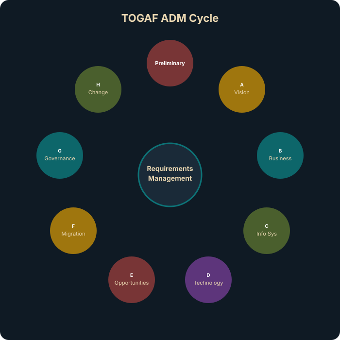
🚨 مَعلومة اِمتِحانيّة
رَكِّز على أَنَّ TOGAF ADM هِي دَورة تَكراريّة (Iterative) وَلَيسَت خَطّيّة. يُمكِن العَودة لِأَيّ مَرحَلة عِند الحاجة. الامتِحان قَد يَسأَل عَن تَرتيب المَراحِل وَالغَرَض مِن كُلّ مَرحَلة.
إِطار Zachman — Zachman Framework
Zachman Framework هُو مَصفوفة تَصنيفيّة 6×6 تُنَظِّم وَصف المُؤَسَّسة مِن وُجهات نَظَر مُتَعَدِّدة. طَوَّرَه John Zachman في الثَّمانينات وَيُعتَبَر مِن أَقدَم أُطُر العَمَل المِعماريّة المُؤَسَّسيّة.
المَصفوفة تَربِط 6 أَسئِلة تَواصُليّة (الأَعمِدة) مَع 6 مُستَوَيات تَحليليّة (الصُّفوف):
| المُستَوى | What — ماذا | How — كَيف | Where — أَين | Who — مَن | When — مَتى | Why — لِماذا |
|---|---|---|---|---|---|---|
| Contextual (المُدير) | الأَصول | العَمَلِيّات | المَواقِع | المُنَظَّمات | الأَحداث | الأَهداف |
| Conceptual (المالِك) | نَماذِج البَيانات | نَماذِج الأَعمال | نَماذِج المَواقِع | الأَدوار | الجَداوِل | الدَّوافِع |
| Logical (المُصَمِّم) | نَماذِج مَنطِقيّة | مَخطَطات النِّظام | طوبولوجيا الشَّبَكة | واجِهات المُستَخدِم | جَداوِل التَّنفيذ | قَواعِد الأَعمال |
| Physical (البانِي) | تَصميم مادي | تَصميم تَقني | بنية الشَّبَكة | بنية العَرض | بنية التَّوقيت | بنية القَواعِد |
| Detailed (المُبَرمِج) | تَعريفات | بَرامِج | عَناوين | أَمن المُستَخدِم | أَحداث البَرمَجة | شُروط |
| Functioning (المُشَغِّل) | بَيانات حَيّة | عَمَلِيّات حَيّة | شَبَكات حَيّة | أَشخاص حَقيقيّون | أَحداث حَقيقيّة | أَهداف مُحَقَّقة |
🔑 الفَرق بَين TOGAF و Zachman
TOGAFهُو مَنهَجيّة (Method) — يُخبِرُك كَيف تَبني الهَندَسة المِعماريّة خُطوة بِخُطوةZachmanهُو تَصنيف (Taxonomy/Ontology) — يُخبِرُك ماذا تُوَثِّق وَمِن أَيّ مَنظور- يُمكِن استِخدامهما مَعاً:
TOGAF ADMكَعَمَلِيّة وZachmanكَإِطار تَوثيق
دَور المِعماري — The Architect Role
المِعماري في سِياق VCF ليس مُجَرَّد مُصَمِّم تِقني — هُو الجِسر بَين أَهداف الأَعمال والتَّنفيذ التِّقني. يَتَعامَل مَع مُستَوَيات مُتَعَدِّدة مِن أَصحاب المَصلَحة:
🎓 أَدوار المِعماري
- Enterprise Architect — الرُّؤية الشّامِلة لِلمُؤَسَّسة
- Solution Architect — تَصميم حَلّ مُحَدَّد (مِثل VCF)
- Infrastructure Architect — البنية التَّحتيّة التِّقنيّة
- Security Architect — الأَمان والحَوكَمة
- Network Architect — الشَّبَكات والاتِّصال
🤝 أَصحاب المَصلَحة
- Executive Sponsors — تَمويل وَدَعم المَشروع
- Lines of Business (LOBs) — مُتَطَلَّبات العَمَل
- Operations Teams — التَّشغيل اليَومي
- Security/Compliance — المُتَطَلَّبات التَّنظيميّة
- Developers & SREs — المُستَهلِكون النِّهائيّون
مَنهَجيّات التَّسليم — Delivery Methodologies
🚧 Waterfall — النَّموذَج الشَّلّالي
- مَراحِل مُتَتابِعة — كُلّ مَرحَلة تَكتَمِل قَبل بَدء التّالية
- تَوثيق مُكَثَّف قَبل التَّنفيذ
- مُناسِب لِلمَشاريع ذات المُتَطَلَّبات الثّابِتة
- خَطَر: تَغييرات مُتَأَخِّرة مُكلِفة جِدّاً
- الاستِخدام: البنية التَّحتيّة الماديّة
🚀 Agile — المَنهَجيّة الرَّشيقة
- تَكرارات قَصيرة (Sprints) مَع تَسليم مُستَمِر
- مُرونة في التَّعامُل مَع التَّغييرات
- تَعاوُن مُستَمِر مَع أَصحاب المَصلَحة
- مُناسِب لِلمَشاريع السَّحابيّة والبَرمَجيّة
- الاستِخدام: أَتمَتة VCF، خَدَمات التَّطبيقات
💡 نَصيحة عَمَلِيّة
في مَشاريع VCF الحَقيقيّة، غالِباً ما نَستَخدِم مَزيجاً: Waterfall لِلتَّصميم الفيزيائي (الأَجهِزة والشَّبَكات) و Agile لِلتَّكوين والأَتمَتة والخَدَمات.
🧠 اِحفَظ — Architecture Deliverables
- Architecture Vision Document — وَثيقة الرُّؤية المِعماريّة (Phase A)
- Architecture Definition Document (ADD) — تَعريف الهَندَسة المِعماريّة (Phases B-D)
- Architecture Requirements Specification — مُواصَفات المُتَطَلَّبات (Phase E)
- Architecture Roadmap — خَريطة الطَّريق (Phase F)
- Transition Architecture — هَندَسة الانتِقال (Phase E-F)
✅ Knowledge Check — Module 01
Q1. Which architecture framework uses the Architecture Development Method (ADM)?
Correct: B
TOGAF uses ADM as an iterative cycle for architecture development.
Q2. How does the Zachman Framework organize enterprise architecture?
Correct: B
Zachman = 6×6 taxonomic matrix: Who, What, Where, When, Why, How × stakeholder perspectives.
Q3. TOGAF ADM Phase B focuses on which architecture domain?
Correct: A
Phase B = Business Architecture. Phase C = Information Systems (Data + Application). Phase D = Technology.
Q4. Which statement is correct about TOGAF vs Zachman?
Correct: C
TOGAF = process-driven (ADM). Zachman = classification-driven (matrix). They complement each other.
Q5. The primary role of an enterprise architect is to:
Correct: B
Enterprise architects bridge business strategy and IT implementation through design and roadmaps.
Q6. At which design level are specific products and hardware selected?
Correct: C
Physical Design specifies products, hardware models, firmware versions, and configurations.
مُتَطَلَّبات الأَعمال وَخَرائِط القُدُرات
تَعَلَّم كَيف تُحَوِّل أَهداف الأَعمال إِلى مُتَطَلَّبات تِقَنيّة وَكَيف تُوَظِّف خَرائِط القُدُرات لِبِناء رُؤية مِعماريّة مُتَماسِكة.
🎯 أَهداف هَذا المودِيول
- تَصنيف المُتَطَلَّبات الوَظيفيّة وَغَير الوَظيفيّة
- تَطبيق مَنهَجيّة
MoSCoWلِتَرتيب الأَولَويّات - فَهم القُيود والافتِراضات والمَخاطِر في التَّصميم
- بِناء مَصفوفة تَتَبُّع المُتَطَلَّبات
(RTM) - خَرائِط القُدُرات وَرَبطها بِأَهداف الأَعمال
أَنواع المُتَطَلَّبات — Functional vs. Non-Functional
✅ المُتَطَلَّبات الوَظيفيّة — Functional Requirements
تُحَدِّد ماذا يَجِب أَن يَفعَلَه النِّظام — الوَظائِف والقُدُرات المَطلوبة:
- دَعم
500آلة افتِراضيّة في الإِنتاج - تَوفير بَوّابة خِدمة ذاتيّة
(Self-Service Portal) - دَعم حاويات
Kubernetesإِلى جانِب الآلات الافتِراضيّة - تَوفير خَدَمات قَواعِد البَيانات كَخِدمة
(DBaaS) - دَعم مَواقِع مُتَعَدِّدة لِلتَّعافي مِن الكَوارِث
🛠 المُتَطَلَّبات غَير الوَظيفيّة — Non-Functional Requirements
تُحَدِّد كَيف يَجِب أَن يَعمَل النِّظام — خَصائِص الجَودة:
- تَوَفُّر
99.99%لِأَحمال العَمَل الحَرِجة - زَمَن اِستِجابة أَقَلّ مِن
5msلِلتَّخزين - التَّوافُق مَع مَعايير
PCI-DSSوHIPAA - تَشفير البَيانات في الراحة والنَّقل
(At-Rest & In-Transit) - القُدرة على التَّوَسُّع إِلى
2000آلة خِلال12شَهر
🔑 العَلاقة مَع AMPRS
المُتَطَلَّبات غَير الوَظيفيّة تَرتَبِط مُباشَرة بِمَعايير جَودة التَّصميم AMPRS:
تَرتيب الأَولَويّات — MoSCoW Method
| التَّصنيف | المَعنى | مِثال في VCF |
|---|---|---|
| Must Have | إِلزامي — بِدونِه المَشروع يَفشَل | تَوَفُّر 99.99%، تَشفير البَيانات |
| Should Have | مُهِمّ لَكِن لَيس حَرِجاً | بَوّابة خِدمة ذاتيّة، مُراقَبة مُتَقَدِّمة |
| Could Have | مَرغوب إِذا سَمَحَ الوَقت والميزانيّة | دَعم Private AI، تَكامُل NetOps |
| Won't Have | مُؤَجَّل لِلمُستَقبَل | دَعم Edge Computing، Multi-Cloud |
القُيود والافتِراضات والمَخاطِر — Constraints, Assumptions, Risks
حُدود لا يُمكِن تَجاوُزها:
- ميزانيّة — حَدّ أَقصى مِن الاستِثمار
- تَنظيميّة — البَيانات يَجِب أَن تَبقى في الدَّولة
(Data Sovereignty) - تِقنيّة — الأَجهِزة الموجودة يَجِب إِعادة استِخدامها
- زَمَنيّة — المَشروع يَجِب أَن يَكتَمِل خِلال
6أَشهُر - مُوَظَّفين — الفَريق مَحدود بِـ
5مُهَندِسين
أُمور نَفتَرِضها صَحيحة لَكِن يَجِب التَّحَقُّق مِنها:
- الشَّبَكة الحاليّة تَدعَم
25GbEكَحَدّ أَدنى - تَراخيص
VCFمُتاحة وَتُغَطّي جَميع الأَنوية - فَريق العَمَلِيّات لَدَيه خِبرة أَساسيّة بِـ
vSphere - خَدَمات
DNSوNTPوActive Directoryمُتاحة
تَهديدات مُحتَمَلة يَجِب التَّخطيط لَها:
- تَأَخُّر تَسليم الأَجهِزة مِن المُوَرِّد
- مُقاوَمة التَّغيير مِن فِرَق العَمَلِيّات
- عَدَم تَوافُق التَّطبيقات القَديمة مَع البيئة الجَديدة
- تَغَيُّر المُتَطَلَّبات التَّنظيميّة أَثناء التَّنفيذ
مَصفوفة تَتَبُّع المُتَطَلَّبات — Requirements Traceability Matrix
RTM هي أَداة حَرِجة تَربِط كُلّ مُتَطَلَّب بِعُنصُر التَّصميم الَّذي يُحَقِّقه، مِمّا يَضمَن عَدَم إِغفال أَيّ مُتَطَلَّب وَيُسَهِّل المُراجَعة والتَّدقيق.
| ID | المُتَطَلَّب | MoSCoW | AMPRS | عُنصُر التَّصميم |
|---|---|---|---|---|
| REQ-001 | تَوَفُّر 99.99% | Must | A | Stretched Cluster + vSphere HA |
| REQ-002 | تَشفير At-Rest | Must | S | vSAN Encryption + KMS |
| REQ-003 | Self-Service Portal | Should | M | VCF Automation Catalog |
| REQ-004 | I/O Latency < 5ms | Must | P | vSAN ESA + NVMe |
| REQ-005 | DR لِلمَوقِع الثّاني | Must | R | VMware Live Recovery |
🚨 مَعلومة اِمتِحانيّة
الامتِحان قَد يُعطيك سيناريو مُتَطَلَّبات وَيَسأَلُك عَن التَّصنيف المُناسِب (Functional vs. Non-Functional)، أَو يَطلُب تَطبيق MoSCoW لِتَرتيب الأَولَويّات.
خَرائِط القُدُرات — Capability Mapping
خَريطة القُدُرات (Capability Map) هي أَداة بَصَريّة تَربِط أَهداف الأَعمال بِالقُدُرات التِّقنيّة المَطلوبة. تُستَخدَم في مَرحَلة التَّصميم المَفهومي لِتَحويل المُبادَرات التِّجاريّة إِلى خَدَمات تِقنيّة:
الهَيكَل الهَرَمي يَربِط ثَلاثة مُستَوَيات:
- Business Initiative (BI) — المُبادَرة التِّجاريّة (مِثل: تَحديث البنية التَّحتيّة)
- Use Case (UC) — حالة الاستِخدام (مِثل: تَحديث التَّطبيقات)
- Service Layer — طَبَقة الخَدَمات (
Compute,Storage,Network,Security,Automation,Operations,DR/CR)
كُلّ خِدمة تُرَبَط بِمُكَوِّنات VCF المُحَدَّدة الَّتي تُحَقِّقها.
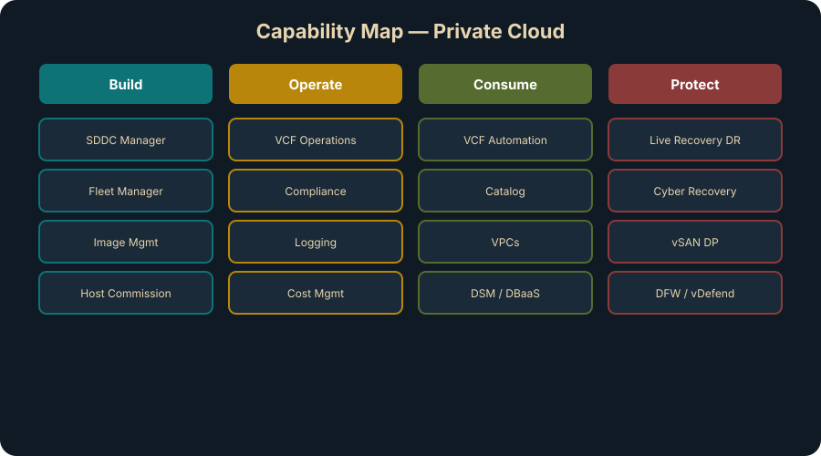
🧠 اِحفَظ — الأُسُس الثَّلاثة لِلتَّخطيط
- Requirements — ماذا نَحتاج؟ (وَظيفي + غَير وَظيفي)
- Constraints — ما الحُدود؟ (ميزانيّة، تَنظيمي، زَمَني)
- Assumptions — ماذا نَفتَرِض؟ (يَجِب التَّحَقُّق)
التَّرقية مُقابِل النَّشر الجَديد — Upgrade vs. New Deployment
🔄 التَّرقية — Upgrade Path
- بيئة
vSphereموجودة → تَرقية إِلىVCF 9.0 - الحِفاظ على الاستِثمار الحالي في الأَجهِزة
- أَقَلّ تَعطيلاً لِلعَمَلِيّات الجاريّة
- يَتَطَلَّب تَخطيطاً دَقيقاً لِلتَّوافُقيّة
🔨 النَّشر الجَديد — Greenfield Deployment
- بِناء بيئة
VCF 9.0مِن الصِّفر - حُرِّيّة كامِلة في اختِيار الأَجهِزة والتَّصميم
- أَفضَل مُمارَسات مُطَبَّقة مِن البِداية
- تَكلُفة أَولِيّة أَعلى لَكِن تَصميم أَنظَف
✅ Knowledge Check — Module 02
Q1. A Capability Map helps organizations by:
Correct: B
Capability Maps visualize what the organization can do today, identifying gaps for transformation planning.
Q2. Which is an example of a functional requirement?
Correct: B
Functional = what the system must do. Non-functional = how well (performance, availability, compliance).
Q3. Non-functional requirements include:
Correct: C
Non-functional requirements define quality attributes: performance, security, availability, compliance.
Q4. AMPRS stands for:
Correct: B
AMPRS = the five design quality pillars used throughout VCF architecture design.
Q5. Stakeholder interviews are important in the design process because they:
Correct: B
Stakeholder interviews capture the business context and priorities that drive architectural decisions.
عَمَلِيّة التَّصميم — مِن المَفهوم إِلى التَّنفيذ
اِستَوعِب المُستَوَيات الثَّلاثة لِلتَّصميم المِعماري وَكَيف تَتَّخِذ قَرارات تَصميم مَدعومة بِـ AMPRS.
🎯 أَهداف هَذا المودِيول
- شَرح المُستَوَيات الثَّلاثة لِلتَّصميم: المَفهومي، المَنطِقي، الفيزيائي
- تَطبيق كُلّ مُستَوى على سِياق
VCF - فَهم مَعايير جَودة التَّصميم
AMPRSبِالتَّفصيل - اِتِّخاذ قَرارات تَصميم مَدعومة بِالمُتَطَلَّبات
- بِناء وَثائِق التَّصميم المِعياريّة
المُستَوَيات الثَّلاثة لِلتَّصميم المِعماري
عَمَلِيّة التَّصميم في VCF تَمُرّ بِثَلاثة مُستَوَيات مُتَدَرِّجة مِن المُجَرَّد إِلى المُحَدَّد. كُلّ مُستَوى يُجيب عَن أَسئِلة مُختَلِفة وَيَستَهدِف جُمهوراً مُختَلِفاً:
تَحويل أَهداف الأَعمال إِلى رُؤية مِعماريّة عامّة. يُجيب عَن: "ماذا نَحتاج؟"
- أَهداف الأَعمال والمُبادَرات التِّجاريّة
- المُتَطَلَّبات الوَظيفيّة وَغَير الوَظيفيّة
- القُيود والافتِراضات والمَخاطِر
- خَريطة القُدُرات
(Capability Map) - حالات الاستِخدام المُحَدَّدة
- نَموذَج التَّشغيل العام
(Operating Model) - وَثيقة الرُّؤية المِعماريّة
(Architecture Vision)
"نَحتاج سَحابة خاصّة تَدعَم 3 مُبادَرات: تَحديث البنية التَّحتيّة، تَوحيد تَجرُبة السَّحابة، مَنصّة آمِنة ومَرِنة — مَع 9 حالات استِخدام عَبر 3 مَواقِع."
تَحويل الرُّؤية المَفهوميّة إِلى هَندَسة مَنطِقيّة بِدون تَفاصيل الأَجهِزة. يُجيب عَن: "كَيف نَبنيه مَنطِقيّاً؟"
- التَّصميم المَفهومي وَخَريطة القُدُرات
- مُتَطَلَّبات
AMPRSالمُحَدَّدة - مَعايير
VCFوَأَفضَل المُمارَسات
- مُخَطَّط
Workload Domains(عَدَد، نَوع، غَرَض) - طوبولوجيا الشَّبَكة المَنطِقيّة (
NSX Segments,VPCs) - نَموذَج التَّخزين (
vSAN ESA,HCI,Storage Cluster) - نَماذِج
VCF FleetوOperations - سِياسات الأَمان والتَّوَفُّر
"VCF Instance واحِد مَع Management Domain (HA) و 3 Workload Domains: إِنتاج (Stretched Cluster)، تَطوير (Standard)، AI (GPU-enabled). تَخزين vSAN ESA. شَبَكات NSX مَع VPCs."
تَحويل التَّصميم المَنطِقي إِلى مُواصَفات قابِلة لِلتَّنفيذ. يُجيب عَن: "بِالضَّبط أَيّ أَجهِزة وَكَيف نُوَصِّلها؟"
- التَّصميم المَنطِقي المُعتَمَد
VCF Validated DesignsوReadyNodeالمُعتَمَدة- قُيود المَوقِع الفيزيائي (طاقة، تَبريد، مَساحة)
- مُواصَفات الأَجهِزة (
ReadyNode: طِراز، مُعالِجات، ذاكِرة، أَقراص) - مُخَطَّطات الكابِلات
(Physical Wiring Diagrams) - جَداوِل
IP/VLANالمُفَصَّلة - كُتُب العَمَل
(Planning & Preparation Workbook) - إِجراءات النَّشر خُطوة بِخُطوة
"Dell VxRail V670F × 12 عُقدة، كُلّ عُقدة: 2× Intel Xeon 8490H, 1TB RAM, 8× 3.84TB NVMe. شَبَكة 25GbE مَع Dell S5248F-ON ToR. VLAN 1610-1625."
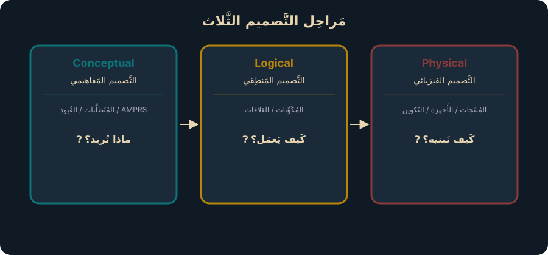
مَعايير جَودة التَّصميم — AMPRS Design Qualities
AMPRS هُو الاختِصار المُستَخدَم في مَنهَجيّة تَصميم VMware لِلإِشارة إِلى خَمس خَصائِص جَودة يَجِب مُراعاتها في كُلّ قَرار تَصميمي:
ضَمان اِستِمراريّة الخَدَمات وَتَقليل وَقت التَّوَقُّف:
- vSphere HA — إِعادة تَشغيل الآلات الافتِراضيّة عِند فَشَل المُضيف
- Stretched Clusters — تَوزيع العَمَل عَبر
Availability Zones - Fault Domains — عَزل الأَعطال على مُستَوى الرَّف
- NSX Edge HA — تَوَفُّر عالٍ لِخَدَمات الشَّبَكة
- Design Blueprints — نَماذِج
SimpleمُقابِلHigh Availability
سُهولة التَّشغيل والمُراقَبة والتَّحديث:
- VCF Operations — مُراقَبة مُوَحَّدة لِكامِل البيئة
- VCF Automation — أَتمَتة التَّزويد والخَدَمات
- SDDC Manager — إِدارة دَورة حَياة المُكَوِّنات
(LCM) - Fleet Management — إِدارة مَرَكزيّة لِشَهادات وَكَلِمات المُرور
- Capacity Planning — تَخطيط السَّعة الاستِباقي
تَحسين الأَداء والاستِجابة:
- Network I/O Control (NIOC) — تَوزيع عَرض النِّطاق
- vSAN ESA — أَداء تَخزين مُحَسَّن مَع
NVMe - DRS — تَوازُن الأَحمال الدّيناميكي
- NUMA Optimization — تَحسين الوُصول لِلذّاكِرة
- NSX Edge Sizing — تَحجيم حَسَب حَجم حَرَكة المُرور
القُدرة على التَّعافي مِن الأَعطال والكَوارِث:
- VMware Live Recovery —
DRمُنَظَّم مَعRunbook Automation - Ransomware Recovery — تَعافٍ مِن هَجَمات الفِدية بِبيئة مَعزولة
- vSAN Data Protection — نُسَخ اِحتِياطيّة مُتَّسِقة
- Stretched Clusters — تَجَنُّب الكَوارِث
(Disaster Avoidance) - RPO/RTO — تَحديد أَهداف الاستِرداد لِكُلّ مُستَوى خِدمة
حِماية البيئة مِن التَّهديدات والامتِثال لِلمَعايير:
- NSX Micro-segmentation — تَقسيم الشَّبَكة على مُستَوى الآلة الافتِراضيّة
- vDefend — جِدار ناري مُوَزَّع +
IDS/IPS+NDR - vSAN Encryption — تَشفير البَيانات في الراحة والنَّقل
- Identity Broker — إِدارة هُويّات مَركَزيّة مَع
RBAC - Compliance — الامتِثال لِـ
PCI-DSS,HIPAA,NIST
🚨 مَعلومة اِمتِحانيّة
الامتِحان يَختَبِر فَهمَك لِكَيفيّة رَبط AMPRS بِقَرارات التَّصميم. لِكُلّ سيناريو: حَدِّد أَيّ خاصِيّة جَودة تَتَأَثَّر، ثُمَّ اِختَر الحَلّ المُناسِب.
قَرارات التَّصميم — Design Decisions
كُلّ قَرار تَصميمي يَجِب تَوثيقه بِشَكل مُنَظَّم يَتَضَمَّن:
| العُنصُر | الوَصف | مِثال |
|---|---|---|
| Decision ID | مُعَرِّف فَريد | ARCH-NET-001 |
| Decision Statement | وَصف القَرار | استِخدام NSX لِلشَّبَكات الافتِراضيّة |
| Justification | المُبَرِّر | يُلَبّي مُتَطَلَّب Micro-segmentation |
| Implication | التَّأثير | يَتَطَلَّب تَدريب فَريق الشَّبَكات |
| AMPRS Impact | الخَصائِص المُتَأَثِّرة | S A |
| Risk | المَخاطِر المُرتَبِطة | مُنخَفِض — تِقنيّة مُثبَتة |
🧠 اِحفَظ — مُلَخَّص المُستَوَيات
| المُستَوى | السُّؤال | الجُمهور | مُخرَج VCF |
|---|---|---|---|
| Conceptual | ماذا؟ | المالِك / CTO | Capability Map, Use Cases |
| Logical | كَيف مَنطِقيّاً؟ | المُصَمِّم / Architect | Domain Topology, Network Model |
| Physical | بِالضَّبط أَيّ أَجهِزة؟ | المُنَفِّذ / Engineer | ReadyNode Specs, Wiring, IPs |
✅ Knowledge Check — Module 03
Q1. The correct order of the three design levels is:
Correct: B
Design flows from abstract to concrete: Conceptual (what) → Logical (how it works) → Physical (how to build it).
Q2. Conceptual design focuses on:
Correct: A
Conceptual = business-driven. Captures requirements, constraints, assumptions, and risks (AMPRS evaluation).
Q3. Logical design defines:
Correct: B
Logical = technology-neutral. Defines what components exist and how they relate, not which specific products.
Q4. Which of the following belongs to Physical design?
Correct: C
Physical design maps logical components to real products: hardware models, versions, IP schemes, configs.
Q5. Design quality is measured using the:
Correct: B
AMPRS (Availability, Manageability, Performance, Recoverability, Security) evaluates design quality at every level.
Q6. Who validates the architecture design at each level?
Correct: C
Each level has different stakeholders: executives (conceptual), technical leads (logical), engineers (physical).
رُؤية السَّحابة الخاصّة الحَديثة
اِفهَم تَحَدِّيات البيئات الحاليّة وَالقيمة التِّجاريّة والماليّة لِلسَّحابة الخاصّة وَمَبادِئها الأَساسيّة.
🎯 أَهداف هَذا المودِيول
- تَحديد التَّحَدِّيات الرَّئيسيّة لِلبيئات التَّقليديّة
- شَرح القيمة التِّجاريّة والماليّة لِلسَّحابة الخاصّة الحَديثة
- تَعريف السِّمات الخَمس الأَساسيّة لِـ
MPC - فَهم المُبادَرات الثَّلاث الاستِراتيجيّة وَحالات الاستِخدام التِّسع
- التَّمييز بَين نَموذَج التَّشغيل التَّقليدي والحَديث
تَحَدِّيات البيئات التَّقليديّة — Why Change?
قَبل الحَديث عَن السَّحابة الخاصّة الحَديثة، يَجِب فَهم لِماذا التَّغيير ضَرورة وَلَيس اختِياراً:
- أَدَوات مُتَعَدِّدة غَير مُتَكامِلة لِلمُراقَبة والإِدارة
- عَمَلِيّات يَدَويّة مُتَكَرِّرة — تَزويد
VMيَستَغرِق أَيّاماً - نَقص في الرُّؤية الشّامِلة
(Unified Visibility) - فِرَق عَمَل مُنعَزِلة
(Siloed Teams)
- تَكلُفة السَّحابة العامّة مُتَصاعِدة وَغَير مُتَوَقَّعة
- هَدر المَوارِد — مُعَدَّل استِخدام
15-30%فَقَط - تَكاليف التَّشغيل أَعلى مِن تَكاليف البنية التَّحتيّة
- صُعوبة تَقدير
TCOالحَقيقي
- هَجَمات الفِدية
(Ransomware)تَتَزايَد - مُتَطَلَّبات تَنظيميّة مُتَشَدِّدة (
GDPR,PCI-DSS,NIST) - سَطح هُجوم مُتَوَسِّع مَع
Multi-Cloud - صُعوبة إِثبات الامتِثال مَع أَنظِمة مُتَعَدِّدة
القيمة التِّجاريّة لِلسَّحابة الخاصّة — MPC Value Proposition
- أَتمَتة مِن الطَّلَب إِلى التَّزويد — دَقائِق بَدَل أَيّام
- إِدارة دَورة الحَياة المُوَحَّدة
(Unified LCM) - تَقليل الأَدَوات والعَمَلِيّات اليَدَويّة
- خَفض تَكاليف التَّشغيل بِنِسبة تَصِل إِلى
73% - إِعادة تَوجيه أَحمال العَمَل مِن السَّحابة العامّة
(Repatriation) - تَحسين استِخدام المَوارِد مِن
25%إِلى70%+ - تَقليل البَصمة الكَربونيّة
(GreenScore)
- بَوّابة خِدمة ذاتيّة لِلمُطَوِّرين والفِرَق
- كَتالوج خَدَمات مُوَحَّد
(Service Catalog) - دَعم أَعباء العَمَل المُتَعَدِّدة: VMs + Containers + AI
- نَشر في دَقائِق بَدَل أَسابيع
السِّمات الخَمس لِلسَّحابة الخاصّة الحَديثة — 5 Key Attributes
Software-Defined Infrastructure — بنية تَحتيّة مُعَرَّفة بِالبَرمَجيّات
الحَوسَبة والتَّخزين والشَّبَكات والأَمان والحِماية — كُلّها مُجَرَّدة ومُدارة بِالبَرمَجيّات عَبر VCF.
Self-Service & Automation — خِدمة ذاتيّة وَأَتمَتة
تَركيز على الاستِهلاك — المُستَأجِرون يَتَحَكَّمون في مَوارِدهم عَبر بَوّابة وَAPIs بِدون تَدَخُّل يَدوي.
Workload Agnostic — لا تَعتَمِد على نَوع العَمَل
تَدعَم أَحمال العَمَل الحَديثة والتَّقليديّة وَAI: آلات افتِراضيّة (VMs) + حاويات (K8s) + GPU Workloads.
Location Agnostic — لا تَعتَمِد على المَوقِع
نَشر في أَيّ مَكان: مَركَز بَيانات خاصّ، سَحابة عامّة، حافّة (Edge)، بيئة سِياديّة (Sovereign).
Security & Governance — الأَمان والحَوكَمة
المُرونة مَع التَّحَكُّم في التَّكاليف، إِدارة دَورة الحَياة المُؤَتمَتة (LCM)، وَإِنفاذ السِّياسات المَركَزي.
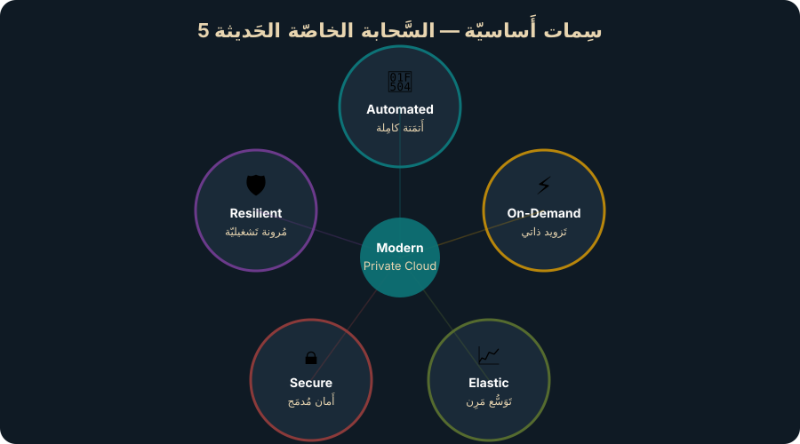
المُبادَرات الثَّلاث وَحالات الاستِخدام التِّسع
🔹 المُبادَرة 1: تَحديث البنية التَّحتيّة — Modernize Infrastructure
| # | حالة الاستِخدام | الوَصف |
|---|---|---|
| 1 | Private Cloud | تَحويل مَركَز البَيانات إِلى سَحابة خاصّة مَع VCF |
| 2 | Sovereign Cloud | سَحابة سِياديّة تَتَوافَق مَع قَوانين سِيادة البَيانات |
| 3 | Edge Compute | حَوسَبة على الحافّة قَريبة مِن المُستَخدِمين |
🔹 المُبادَرة 2: تَوحيد تَجرُبة السَّحابة — Unified Cloud Experience
| # | حالة الاستِخدام | الوَصف |
|---|---|---|
| 4 | App Modernization | تَحديث التَّطبيقات بِاستِخدام Tanzu و K8s |
| 5 | Private AI | ذَكاء اِصطِناعي خاصّ مَع NVIDIA NIM |
| 6 | DBaaS | قَواعِد بَيانات كَخِدمة مَع Data Services Manager |
🔹 المُبادَرة 3: مَنصّة آمِنة ومَرِنة — Secure & Resilient Platform
| # | حالة الاستِخدام | الوَصف |
|---|---|---|
| 7 | Zero Trust Security | أَمان شامِل مَع vDefend و Micro-segmentation |
| 8 | Ransomware Recovery | تَعافٍ مِن هَجَمات الفِدية مَع Live Recovery |
| 9 | Disaster Recovery | تَعافٍ مِن الكَوارِث مَع Live Recovery DR |
🚨 مَعلومة اِمتِحانيّة
اِحفَظ المُبادَرات الثَّلاث وَحالات الاستِخدام التِّسع. الامتِحان يَسأَل عَن رَبط حالة استِخدام بِالمُبادَرة المُناسِبة أَو بِمُكَوِّن VCF المُقابِل.
🧠 اِحفَظ — السِّمات الخَمس
لِلتَّذَكُّر: S.S.W.L.S — Software-Defined, Self-Service, Workload-Agnostic, Location-Agnostic, Security & Governance.
✅ Knowledge Check — Module 04
Q1. The five key challenges of traditional private cloud are:
Correct: B
Five challenges: operational complexity, slow provisioning, security threats, skills gap, and rising costs.
Q2. A Modern Private Cloud (MPC) must be:
Correct: B
The five key MPC attributes match public cloud experience while maintaining private cloud control.
Q3. 'Cloud-like experience' means:
Correct: C
Cloud-like = self-service, API-driven, metered, elastic — without leaving your data center.
Q4. VCF addresses the skills gap challenge by:
Correct: A
VCF consolidates dozens of tools into one integrated platform, reducing the breadth of skills needed.
Q5. Which is NOT an attribute of a Modern Private Cloud?
Correct: D
Manual provisioning contradicts the automation and self-service principles of MPC.
هَندَسة الحالة المُستَقبَليّة
تَعَلَّم رِحلة FSA — مِن الاكتِشاف إِلى تَقييم النُّضج وَبِناء خَرائِط القُدُرات وَتَحليل الفَجَوات.
🎯 أَهداف هَذا المودِيول
- فَهم رِحلة هَندَسة الحالة المُستَقبَليّة
(FSA Journey) - إِجراء عَمَلِيّة الاكتِشاف
(Discovery)وَبِناء الحالة الحاليّة - تَطبيق نَموذَج تَقييم النُّضج السَّحابي
(CMI) - بِناء خَرائِط القُدُرات وَتَحليل الفَجَوات
- تَصميم الحالة المُستَقبَليّة بِناءً على الفَجَوات المُكتَشَفة
رِحلة هَندَسة الحالة المُستَقبَليّة — The FSA Journey
رِحلة Future State Architecture (FSA) هي مَنهَجيّة مُنَظَّمة لِتَحويل المُؤَسَّسة مِن حالتها الحاليّة إِلى الحالة المُستَهدَفة. تَتَكَوَّن مِن خَمس مَراحِل:
الاكتِشاف — Discovery
جَمع المَعلومات عَن الحالة الحاليّة: البنية التَّحتيّة، العَمَلِيّات، الفِرَق، القُدُرات. إِجراء مُقابَلات مَع أَصحاب المَصلَحة وَتَوثيق النَّتائِج.
تَقييم النُّضج — Maturity Assessment
تَقييم نُضج المُؤَسَّسة عَبر 7 أَبعاد باستِخدام نَموذَج CMI (مُستَوَيات 1-5). تَحديد نِقاط القُوّة والضَّعف.
الحالة المُستَهدَفة — Target State
تَصميم الحالة المَرغوبة بِناءً على أَهداف الأَعمال. تَحديد الفَجَوات بَين الحالة الحاليّة والمُستَهدَفة.
خُطَط العَمَل — Prioritized Workstreams
تَحويل الفَجَوات إِلى مَشاريع ذات أَولَويّة — تَقييم الجُهد مُقابِل القيمة، وَضع جَداوِل زَمَنيّة.
التَّحسين — Optimization & Review
مُراجَعة النَّتائِج، قِياس الأَداء مُقابِل KPIs، إِعادة تَقييم النُّضج، التَّحسين المُستَمِر.
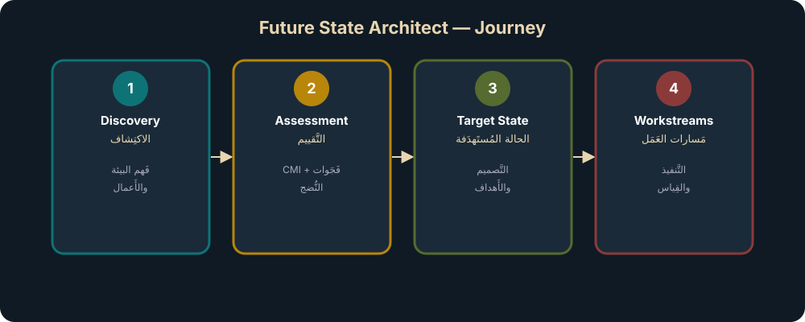
مَرحَلة الاكتِشاف — Discovery Phase
الاكتِشاف هُو الأَساس — بِدون فَهم دَقيق لِلحالة الحاليّة، لا يُمكِن تَصميم حالة مُستَقبَليّة واقِعيّة:
🔎 ماذا نَكتَشِف؟
- البنية التَّحتيّة — أَجهِزة، شَبَكات، تَخزين، إِصدارات
- العَمَلِيّات — أَدَوات المُراقَبة، إِجراءات التَّغيير،
ITSM - الأَشخاص — الفِرَق، المَهارات، الهَيكَل التَّنظيمي
- الأَعمال — الأَهداف، المُتَطَلَّبات، القُيود التَّنظيميّة
- الأَمان — السِّياسات، الامتِثال، التَّهديدات
📝 كَيف نَكتَشِف؟
- مُقابَلات مَع أَصحاب المَصلَحة (
Stakeholder Interviews) - وَرشات عَمَل تَقنيّة (
Technical Workshops) - جَمع البَيانات التِّقنيّة (
RVTools,vROps Reports) - تَحليل الوَثائِق الموجودة
- استِبيانات مُوَجَّهة لِلفِرَق
نَموذَج تَقييم النُّضج السَّحابي — Cloud Maturity Index (CMI)
CMI يُقَيِّم نُضج المُؤَسَّسة عَبر 7 أَبعاد رَئيسيّة وَ5 مُستَوَيات نُضج. يُساعِد في تَحديد أَين أَنتَ الآن وَأَين تُريد أَن تَكون.
أَبعاد التَّقييم السَّبعة
مُستَوَيات النُّضج الخَمسة — CMI Levels 1-5
| المُستَوى | الاسم | الوَصف | مِثال بُعد Infrastructure |
|---|---|---|---|
| 1 | Initial | لا تُوجَد اِستِراتيجيّة سَحابيّة. عَمَلِيّات يَدَويّة وَمُبَعثَرة. | بيئة vSphere تَقليديّة بِدون أَتمَتة |
| 2 | Managed | بَعض العَمَلِيّات مُنَظَّمة. بِداية التَّوحيد. | بِداية استِخدام SDDC Manager |
| 3 | Optimized | عَمَلِيّات مُحَسَّنة. أَتمَتة جُزئيّة. | VCF مَنشور مَع أَتمَتة أَساسيّة |
| 4 | Controlled | حَوكَمة قَويّة. قِياس مُستَمِر. | كَتالوج خَدَمات مَع SLAs مُحَدَّدة |
| 5 | Defined | تَحسين مُستَمِر قائِم على البَيانات. | أَتمَتة كامِلة، خِدمة ذاتيّة، Chargeback |
🔑 كَيف نَستَخدِم CMI؟
- قَيِّم الحالة الحاليّة لِكُلّ بُعد (مُستَوى
1-5) - حَدِّد الحالة المُستَهدَفة لِكُلّ بُعد
- اِحسِب الفَجَوة = المُستَهدَف − الحالي
- رَتِّب الفَجَوات حَسَب التَّأثير على الأَعمال
- خَطِّط مَشاريع سَدّ الفَجَوات
تَحليل الفَجَوات — Gap Analysis
تَحليل الفَجَوات يُقارِن بَين الحالة الحاليّة والمُستَهدَفة عَبر كُلّ بُعد:
| البُعد | الحالة الحاليّة | المُستَهدَف | الفَجَوة | الأَولَويّة |
|---|---|---|---|---|
| Consumers & Services | 1 — لا كَتالوج | 4 — خِدمة ذاتيّة | 3 | عالية |
| Infrastructure | 2 — vSphere فَقَط | 4 — VCF كامِل | 2 | عالية |
| Security & Compliance | 2 — جُزئي | 5 — مُؤَتمَت | 3 | عالية |
| People & Enablement | 1 — فَريق صَغير | 3 — مُتَخَصِّص | 2 | مُتَوَسِّطة |
🚨 مَعلومة اِمتِحانيّة
الامتِحان قَد يُعطيك جَدول CMI وَيَسأَلُك عَن تَحديد الفَجَوة الأَكبَر أَو البُعد الأَكثَر حاجة لِلتَّحسين. رَكِّز على أَنَّ الفَجَوة = المُستَهدَف − الحالي.
🧠 اِحفَظ — مَراحِل FSA
لِلتَّذَكُّر: D.A.T.W.O — Discovery → Assessment → Target → Workstreams → Optimization. الدَّورة تَكراريّة — بَعد التَّحسين يُمكِن العَودة لِلاكتِشاف.
✅ Knowledge Check — Module 05
Q1. The first step in the Future State Architect (FSA) journey is:
Correct: B
Discovery is the starting point: understand business context, technology landscape, people, and processes.
Q2. The Cloud Maturity Index (CMI) has how many levels?
Correct: C
5 levels: Initial → Managed → Optimized → Controlled → Defined.
Q3. CMI Level 1 (Initial) means:
Correct: A
Level 1 = Initial: manual, reactive, inconsistent processes with no standardization.
Q4. The purpose of a maturity assessment is to:
Correct: B
Maturity assessment reveals the gap between where you are (current CMI) and where you want to be (target CMI).
Q5. The FSA engagement is driven by the:
Correct: C
The FSA leads the transformation journey from discovery through assessment to target state design.
الحالة المُستَهدَفة ونَماذِج التَّشغيل
اِبنِ الحالة المُستَهدَفة — عَلاقة IT بِالأَعمال، نَموذَج مَصنَع الخِدمات، الأَدوار التَّنظيميّة، KPIs/OKRs، وَخُطَط العَمَل ذات الأَولَويّة.
🎯 أَهداف هَذا المودِيول
- بِناء الحالة المُستَهدَفة بِناءً على تَحليل الفَجَوات
- فَهم نَماذِج عَلاقة IT بِالأَعمال وَتَطَوُّرها
- تَطبيق نَموذَج مَصنَع الخِدمات
(Service Factory) - تَحديد مُؤَشِّرات الأَداء
(KPIs/OKRs)وَإِطارOGSM - تَرتيب خُطَط العَمَل حَسَب الجُهد مُقابِل القيمة
تَطَوُّر عَلاقة IT بِالأَعمال
فَهم مَكانة فَريقك في سُلَّم العَلاقة مَع الأَعمال أَمر حاسِم لِتَحديد نَموذَج التَّشغيل المُناسِب:
Utility — أَداة تَشغيل
IT كَمَركَز تَكلُفة. "أَبقِ الأَضواء مُشتَعِلة." لا مُشارَكة اِستِراتيجيّة.
Enabler — مُمَكِّن
IT يُمَكِّن الأَعمال. مُشارَكة مَحدودة في القَرارات. خَدَمات أَفضَل وَلَكِن ردّ فِعل.
Partner — شَريك
IT شَريك اِستِراتيجي. مُشارَكة في التَّخطيط. خَدَمات مُتَّفَق عَلَيها مَع SLAs.
Differentiator — عامِل تَمَيُّز
IT يَقود الابتِكار. مَيزة تَنافُسيّة. ابتِكار مُشتَرَك مَع الأَعمال.
نَموذَج مَصنَع الخِدمات — Service Factory Model
📦 خِدمات مُنتَجة — Productized Services
- كُلّ خِدمة لَها مالِك وَ
SLAوَKPI - كَتالوج خَدَمات مَركَزي وَمُوَحَّد
- تَسعير واضِح (
Chargeback/Showback)
🔄 خُطوط إِنتاج مُتَكَرِّرة — Repeatable Pipelines
- أَتمَتة مِن الطَّلَب إِلى التَّسليم
Infrastructure as Code- اِختِبارات وَنَشر مُستَمِر
👥 فِرَق مُتَعَدِّدة التَّخَصُّصات — Cross-Functional Teams
- فِرَق مَنصّة
(Platform Teams) SREلِلمَوثوقيّة- فِرَق أَمان وَامتِثال مُدمَجة
🔄 إِدارة دَورة حَياة الخِدمة — Service Lifecycle Management
- تَصميم → بِناء → نَشر → تَشغيل → تَحسين
- مُراجَعة مُستَمِرّة لِلأَداء
- إِيقاف الخَدَمات غَير المُستَخدَمة
مُؤَشِّرات الأَداء وَالأَهداف — KPIs, OKRs, OGSM
📈 KPIs — Key Performance Indicators
- مُؤَشِّرات كَمِّيّة لِقِياس الأَداء المُستَمِر
- مِثال: "مُعَدَّل تَوَفُّر
99.95%" - مِثال: "زَمَن تَزويد VM <
15دَقيقة" - مِثال: "مُعَدَّل استِخدام المَوارِد >
65%"
🎯 OKRs — Objectives & Key Results
- أَهداف طَموحة مَع نَتائِج قابِلة لِلقِياس
- Objective: "تَحويل مَركَز البَيانات لِسَحابة خاصّة"
- KR1: نَشر
VCFفيQ2 - KR2: هِجرة
80%مِن أَحمال العَمَل فيQ3 - KR3: تَحقيق تَوفير
30%فيQ4
إِطار OGSM — Objectives, Goals, Strategies, Measures
| العُنصُر | الوَصف | مِثال VCF |
|---|---|---|
| Objective | الرُّؤية العامّة | بِناء سَحابة خاصّة حَديثة |
| Goal | أَهداف كَمِّيّة | تَقليل TCO بِنِسبة 40% خِلال 18 شَهر |
| Strategy | الطَّريقة | نَشر VCF 9.0 مَع أَتمَتة كامِلة |
| Measure | طَريقة القِياس | KPIs: تَوَفُّر، تَكلُفة، سُرعة تَزويد |
خُطَط العَمَل ذات الأَولَويّة — Prioritized Workstreams
بَعد تَحديد الفَجَوات، نُحَوِّلها إِلى مَشاريع مُرَتَّبة حَسَب:
| جُهد مُنخَفِض | جُهد عالٍ | |
|---|---|---|
| قيمة عالية | Quick Wins 🚀 اِبدَأ هُنا! | Strategic Projects مَشاريع اِستِراتيجيّة |
| قيمة مُنخَفِضة | Fill-Ins أَثناء الانتِظار | Avoid ⚠ تَجَنَّب أَو أَجِّل |
عَناصِر تَعريف خُطّة العَمَل (Workstream Definition)
- النِّطاق — ماذا يَشمَل المَشروع
- المالِك — مَن يَقود المَشروع
- المَوارِد — الفَريق والأَدَوات المَطلوبة
- الجَدول الزَّمَني — المُدّة والمَراحِل
- التَّكلُفة — الميزانيّة المَطلوبة
- مُؤَشِّرات النَّجاح —
KPIsلِقِياس الإِنجاز - التَّبَعيّات — المَشاريع الَّتي يَعتَمِد عَلَيها
🚨 مَعلومة اِمتِحانيّة
الامتِحان قَد يُعطيك سيناريو وَيَسأَل: "أَيّ نَوع مِن المَشاريع يَجِب أَن يَبدَأ أَوّلاً؟" — الإِجابة دائِماً Quick Wins (قيمة عالية، جُهد مُنخَفِض).
🧠 اِحفَظ — OGSM
Objective (ماذا؟) → Goal (كَم؟) → Strategy (كَيف؟) → Measure (هَل نَجَحنا؟)
✅ Knowledge Check — Module 06
Q1. In the OGSM framework, 'M' stands for:
Correct: B
OGSM = Objective, Goal, Strategy, Measure.
Q2. An Operating Model defines:
Correct: A
Operating Model = the blueprint for how IT organizations deliver, manage, and continuously improve services.
Q3. In the effort/value matrix, 'Quick Wins' are:
Correct: B
Quick Wins = low effort + high value. Start here to build momentum and stakeholder confidence.
Q4. KPIs are used to:
Correct: C
KPIs (Key Performance Indicators) provide quantitative measurement of whether goals are being achieved.
Q5. Workstream planning includes:
Correct: B
Workstream plans define the execution path: what, when, who, dependencies, and how to measure success.
هَندَسة مُكَوِّنات VCF
تَعَمَّق في كَيفيّة رَبط مُكَوِّنات VCF بِحالات الاستِخدام — الحَوسَبة، التَّخزين، الشَّبَكات، العَمَلِيّات، الأَتمَتة، والحِماية.
🎯 أَهداف هَذا المودِيول
- شَرح البنية الهَرَميّة لِـ
VCF: Instance → Domain → Cluster - رَبط مُكَوِّنات
VCFبِقُدُرات السَّحابة الخاصّة (Build, Operate, Consume, Protect) - فَهم طوبولوجيات
Workload Domainsوالكَتَلات - تَوضيح مَفاهيم
VCF FleetوVCF Private Cloud - رَبط الحَوسَبة والتَّخزين والشَّبَكات بِمُكَوِّنات
VCFالمُحَدَّدة
البنية الهَرَميّة لِـ VCF — VCF Constructs
VCF Private Cloud — السَّحابة الخاصّة
المُستَوى الأَعلى — يَتَكَوَّن مِن أُسطول أَو أَكثَر (Fleet). يُمَثِّل البيئة الكامِلة لِلمُؤَسَّسة.
VCF Fleet — الأُسطول
يَتَكَوَّن مِن مَثيل واحِد أَو أَكثَر (Instance) + VCF Operations مَشتَرَك + VCF Automation مَشتَرَك.
VCF Instance — المَثيل
يَتَكَوَّن مِن Management Domain (واحِد إِلزامي) + Workload Domains (صِفر أَو أَكثَر). يُدار بِـ SDDC Manager.
Workload Domain — نِطاق أَحمال العَمَل
يَتَكَوَّن مِن كَتَلة واحِدة أَو أَكثَر (Cluster). لَه vCenter وَNSX Manager مُخَصَّصان أَو مُشتَرَكان.
Cluster — الكَتَلة
مَجموعة مُضيفين (ESXi Hosts) يَتَشارَكون المَوارِد. أَصغَر وَحدة نَشر في VCF.
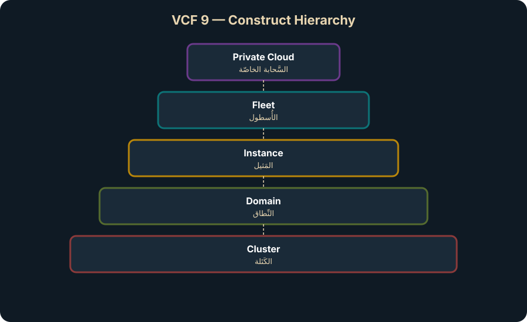
طوبولوجيات Workload Domains والكَتَلات
| النَّموذَج | الوَصف | حالة الاستِخدام | الحِماية |
|---|---|---|---|
| Single-Rack | جَميع المُضيفين في رَفّ واحِد | بيئات صَغيرة / تَطوير | vSphere HA ضِدّ فَشَل المُضيف |
| Multi-Rack L2 | مُضيفون عَبر رُفوف مُتَعَدِّدة — شَبَكة Layer 2 مُشتَرَكة | إِنتاج مُتَوَسِّط | Fault Domains لِحِماية الرَّف |
| Multi-Rack L3 | مُضيفون عَبر رُفوف — كُلّ رَفّ لَه VLANs مُستَقِلّة | إِنتاج كَبير | عَزل كامِل على مُستَوى الرَّف |
| Stretched Cluster | كَتَلة مُمتَدّة عَبر Availability Zones | أَحمال عَمَل حَرِجة | مُقاوَمة فَشَل AZ كامِلة |
| Consolidated | Management + Workload في نَفس الكَتَلة | بيئات صَغيرة جِدّاً | مَوارِد مُشتَرَكة |
رَبط مُكَوِّنات VCF بِقُدُرات MPC
🔨 Build — بِناء البنية التَّحتيّة
| القُدرة | مُكَوِّن VCF |
|---|---|
| الحَوسَبة الافتِراضيّة | ESXi Hypervisor, vSphere HA, DRS, vMotion |
| التَّخزين المُعَرَّف بِالبَرمَجيّات | vSAN ESA, SPBM, Thin Provisioning |
| الشَّبَكات الافتِراضيّة | NSX (Segments, Firewall, VPCs, Edge) |
| أَتمَتة النَّشر | SDDC Manager (LCM, Deployment) |
🛠 Operate — التَّشغيل والمُراقَبة
| القُدرة | مُكَوِّن VCF |
|---|---|
| المُراقَبة المُوَحَّدة | VCF Operations (Metrics, Logs, Alerts) |
| إِدارة الهُويّات | VCF Identity Broker, SSO |
| إِدارة الشَّهادات وَكَلِمات المُرور | VCF Fleet Management |
| تَخطيط السَّعة | VCF Operations Capacity |
| الامتِثال وَالتَّدقيق | VCF Operations Compliance, Configuration Drift |
🚀 Consume — الاستِهلاك والأَتمَتة
| القُدرة | مُكَوِّن VCF |
|---|---|
| كَتالوج الخَدَمات | VCF Automation Catalog |
| الخِدمة الذّاتيّة | VCF Automation Portal, API |
| تَعَدُّد المُستَأجِرين | VCF Automation Organizations, VPCs |
| سِياسات الحَوكَمة | VCF Automation Policy Definitions |
| Kubernetes | vSphere Supervisor, VMware Kubernetes Service (VKS) |
🛡 Protect — الحِماية
| القُدرة | مُكَوِّن VCF |
|---|---|
| النُّسَخ الاحتِياطيّة | VMware Live Recovery, vSAN Data Protection |
| التَّعافي مِن الكَوارِث | VMware Live Recovery DR (Active-Active, Bi-directional) |
| التَّعافي مِن الفِدية | VMware Live Cyber Recovery (IRE, Behavioral Analysis) |
| تَجَنُّب الكَوارِث | Stretched Clusters, Planned Migration |
🚨 مَعلومة اِمتِحانيّة
سُؤال شائِع: "أَيّ مُكَوِّن VCF يُوَفِّر كَتالوج الخَدَمات الذّاتيّة؟" — الإِجابة: VCF Automation Catalog. اِحفَظ الرَّبط بَين كُلّ قُدرة والمُكَوِّن المُقابِل.
🧠 اِحفَظ — الهَرَم
Private Cloud ⊃ Fleet (+ Ops + Automation) ⊃ Instance (+ SDDC Manager) ⊃ Domain (+ vCenter + NSX) ⊃ Cluster (ESXi Hosts)
✅ Knowledge Check — Module 07
Q1. The correct VCF construct hierarchy (top to bottom) is:
Correct: B
Private Cloud ⊃ Fleet ⊃ Instance ⊃ Domain ⊃ Cluster.
Q2. How many Management Domains exist in each VCF Instance?
Correct: B
Exactly one Management Domain per Instance — it is mandatory.
Q3. Which component manages VCF Instance lifecycle (deploy, update, scale)?
Correct: C
SDDC Manager manages the lifecycle of the VCF Instance.
Q4. Fleet Manager in VCF 9 was previously known as:
Correct: B
Fleet Manager = formerly Aria Lifecycle. Manages fleet-level lifecycle across instances.
Q5. VCF Identity Broker replaces which legacy component?
Correct: B
Identity Broker is a new function in vCenter that replaces vIDM for centralized identity management.
Q6. VCF Operations provides:
Correct: A
VCF Operations = unified monitoring, compliance, cost management, and capacity planning across the fleet.
الخِدمات المُتَقَدِّمة
اِستَكشِف الخِدمات الإِضافيّة الَّتي تُعَزِّز قيمة السَّحابة الخاصّة: Private AI, vDefend, Live Recovery, Avi LB, Tanzu, وَغَيرها.
🎯 أَهداف هَذا المودِيول
- وَصف كَيف تُكَمِّل الخِدمات المُتَقَدِّمة مَنصّة
VCFالأَساسيّة - شَرح حالات الاستِخدام لِكُلّ خِدمة مُتَقَدِّمة
- فَهم
Private AIمَعNVIDIAوالبنية المِعماريّة - شَرح
Live Recovery(Ransomware + DR) - التَّعَرُّف على
vDefend,Avi LB,Tanzu,DSMوَغَيرها
الخِدمات المُتَقَدِّمة هي إِضافات (Add-ons) تُعَزِّز قيمة مَنصّة VCF الأَساسيّة. كُلّ خِدمة تُلَبّي حالة استِخدام مُحَدَّدة:
🤖 Private AI Foundation with NVIDIA
إِضافة مُرَخَّصة لِـ VCF تُتيح بِناء وَنَشر خَدَمات LLM و AI على البنية التَّحتيّة الخاصّة — مَع الحِفاظ على الخُصوصيّة والامتِثال.
- NVIDIA NIM Microservices — خَدَمات مُصَغَّرة لِتَشغيل النَّماذِج
- NVIDIA NeMo Retriever — اِستِرجاع البَيانات لِـ
RAG - NVIDIA Blueprints — قَوالِب جاهِزة لِلبَدء السَّريع
- NIM Operator — إِدارة مُوَزَّعة لِمَوارِد
GPU - vSphere Supervisor — تَشغيل كَتَلات
Kubernetesلِلـ AI
🛡 VMware Live Recovery
🔐 Ransomware Recovery
- تَعافٍ مِن الفِدية مَع بيئة مَعزولة
(IRE) - تَحليل سُلوكي مُدمَج
(Behavioral Analysis) - نُقاط اِستِعادة غَير قابِلة لِلتَّغيير
(Immutable) - تَشغيل فَوري لِلآلات
(Instant VM Power-On) - سَير عَمَل مُوَجَّه خُطوة بِخُطوة
- عَزل الشَّبَكة لِمَنع إِعادة العَدوى
🌊 Disaster Recovery
- تَعافٍ مِن الكَوارِث مَع أَتمَتة
Runbook - نَماذِج:
Active-Passive,Active-Active,Bi-Directional - اِختِبار غَير مُعطِّل
(Non-disruptive Testing) - هِجرة مُخَطَّطة
(Planned Migration) RPOيَبدَأ مِن1دَقيقة- اِستِعادة كامِلة أَو جُزئيّة لِلمَوقِع
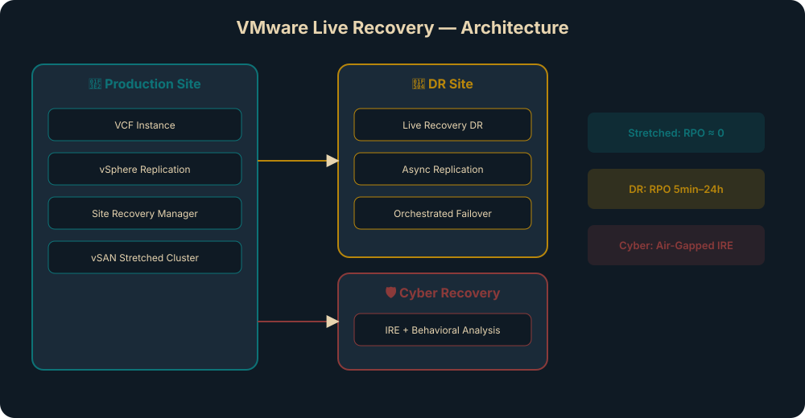
🔒 VMware vDefend — الأَمان المُتَكامِل
| المُكَوِّن | الوَظيفة |
|---|---|
| Distributed Firewall | جِدار ناري مُوَزَّع على مُستَوى الآلة الافتِراضيّة — Micro-segmentation |
| Gateway Firewall | جِدار ناري على حَدّ الشَّبَكة — North-South |
| Distributed IDS/IPS | كَشف وَمَنع الاختِراقات المُوَزَّع |
| Security Intelligence | اِكتِشاف التَّطبيقات، تَحليلات الأَمان، تَوصيات القَواعِد |
| NTA/NDR | تَحليل حَرَكة الشَّبَكة وَكَشف التَّهديدات |
| Sandbox | تَحليل المَلَفّات المَشبوهة في بيئة مَعزولة |
🔑 مَيزة vDefend الأَساسيّة
حِزمة مُتَكامِلة واحِدة (Single Integrated Stack) بَدَل شِراء 5-6 مُنتَجات أَمان مُنفَصِلة. يُقَلِّل التَّكاليف بِنِسبة تَصِل إِلى 50% CapEx و 73% OpEx.
⚖ Avi Load Balancer — مُوازِن الأَحمال
Avi Load Balancer هُو أَوّل مُوازِن أَحمال SDN لِلبيئات المَحَلّيّة. بنية مُوَزَّعة حَديثة: Controller (إِدارة مَركَزيّة) + Service Engines (تَنفيذ مُوَزَّع). يَدعَم VCF، Tanzu، السَّحابة العامّة، وَKubernetes.
🚀 Tanzu Platform — PaaS خاصّة
- مَنصّة كَخِدمة خاصّة —
PaaSلِلتَّطبيقات الحَديثة وَAI - Spring Framework — إِطار
Javaالأَكثَر استِخداماً (72%مِن مُطَوِّري Java) - Elastic App Runtime — تَشغيل تَطبيقات مَع تَوسيع تِلقائي
- Marketplace Services — خَدَمات جاهِزة لِلرَّبط (قَواعِد بَيانات، AI models)
- تَقليل وَقت الوُصول لِلسّوق بِنِسبة
48% - خَفض تَكاليف التَّطوير بِنِسبة
36%
خِدمات إِضافيّة — More Advanced Services
| الخِدمة | الفِئة | الوَظيفة |
|---|---|---|
| Symantec PAM | Secure Access | إِدارة الوُصول المُمَيَّز — حَوكَمة الهُويّات المُمتازة عَبر البيئة المُختَلَطة |
| Automic | Business Operations | أَتمَتة سَير العَمَل التِّجاري — تَنسيق أَعباء العَمَل عَبر ERP, AI, Hybrid |
| ValueOps | Business Operations | إِدارة التَّحَوُّل — رُؤية اِستِراتيجيّة، OKRs، إِدارة المَحافِظ |
| NetOps | Network Observability | رُؤية شامِلة لِلشَّبَكة — مِن المُستَخدِم النِّهائي إِلى ISP |
| Data Services Manager | Data Services | قَواعِد بَيانات كَخِدمة (DBaaS) — PostgreSQL, MySQL, خِدمة ذاتيّة |
🚨 مَعلومة اِمتِحانيّة
رَكِّز على: أَيّ خِدمة تُلَبّي أَيّ حالة استِخدام. الامتِحان يَسأَل "لِحالة استِخدام X، أَيّ خِدمة مُتَقَدِّمة تُضيفها؟" مِثال: DBaaS → Data Services Manager.
🧠 اِحفَظ — الخِدمات المُتَقَدِّمة
✅ Knowledge Check — Module 08
Q1. Which advanced service provides Micro-segmentation?
Correct: B
vDefend DFW provides Micro-segmentation at the VM level — zero-trust east-west traffic control.
Q2. Avi Load Balancer uses which architecture?
Correct: B
Avi = Controller (management plane) + Service Engines (distributed data plane for load balancing).
Q3. Data Services Manager (DSM) provides:
Correct: B
DSM = DBaaS for PostgreSQL and MySQL on VCF infrastructure.
Q4. NVIDIA NIM Microservices are used for:
Correct: B
NIM Microservices = run AI/LLM inference models on your private VCF infrastructure.
Q5. VMware Live Cyber Recovery features:
Correct: B
Live Cyber Recovery = behavioral analysis (not signatures) + managed IRE for ransomware recovery.
Q6. VMware Live Recovery DR provides:
Correct: A
Live Recovery DR = SRM + vSphere Replication for orchestrated, automated disaster recovery.
تَصميم الأُسطول والشَّبَكات
تَعَلَّم تَصميم VCF Fleet بِنَماذِج مُتَعَدِّدة — المَواقِع، المَناطِق، نَماذِج الشَّبَكات، VPC، و NSX Edge.
🎯 أَهداف هَذا المودِيول
- تَحديد نَماذِج تَصميم الأُسطول: مَوقِع واحِد، مَواقِع مُتَعَدِّدة، مَناطِق مُتَعَدِّدة
- فَهم نَماذِج شَبَكات النَّسيج الفيزيائي:
L2,L3,L2-Like over L3 - تَصميم
Distributed Switchوَخَيارات فَصل حَرَكة المُرور - فَهم نَماذِج شَبَكات مُستَوى الأُسطول وَ
NSX Edge Cluster - شَرح
VPCوTransit Gatewayوَنَماذِج الاستِهلاك
مَخطَّطات تَصميم الأُسطول — Fleet Design Blueprints
(Design Blueprint) هُو نَموذَج مُعتَمَد مِن VMware يُحَدِّد طوبولوجيا النَّشر والمُكَوِّنات المَطلوبة. يُسَرِّع عَمَليّة التَّصميم وَيَضمَن الامتِثال لِأَفضَل المُمارَسات.
| النَّموذَج | الوَصف | المُتَطَلَّبات | الحِماية |
|---|---|---|---|
| Single Site — Minimal | مَوقِع واحِد، بَصمة صَغيرة. الإِدارة وَأَحمال العَمَل في نَفس النِّطاق | 7 مُضيفين، 7 VLANs |
vSphere HA فَقَط |
| Single Site — Standard | مَوقِع واحِد. الإِدارة وَأَحمال العَمَل مَفصولة في نِطاقات مُختَلِفة | 7 مُضيفين (4+3)، 13 VLANs |
HA + عَزل كامِل |
| Multi-Site Single Region | مَواقِع مُتَعَدِّدة في مِنطَقة واحِدة — كَتَلات مُمتَدّة | زَمَن اِستِجابة ≤ 5ms بَين المَواقِع |
vSAN Stretched Cluster |
| Multi-Site Multi-Region | مَواقِع في مَناطِق جُغرافيّة مُختَلِفة | Live Recovery / vSphere Replication |
التَّعافي مِن الكَوارِث (DR) |
| Multi-Fleet | أَساطيل مُتَعَدِّدة مُستَقِلّة — كُلّ أُسطول لَه Ops + Automation |
فَصل إِداري كامِل | عَزل تامّ بَين الأَساطيل |
🔑 Start Small, Design for Growth
يُمكِنُك البَدء بِأُسطول واحِد وَمَثيل واحِد وَ7 مُضيفين، ثُمَّ التَّوسُّع تَدريجيّاً إِلى آلاف المُضيفين عَبر مَناطِق مُتَعَدِّدة بِدون إِعادة البِناء.
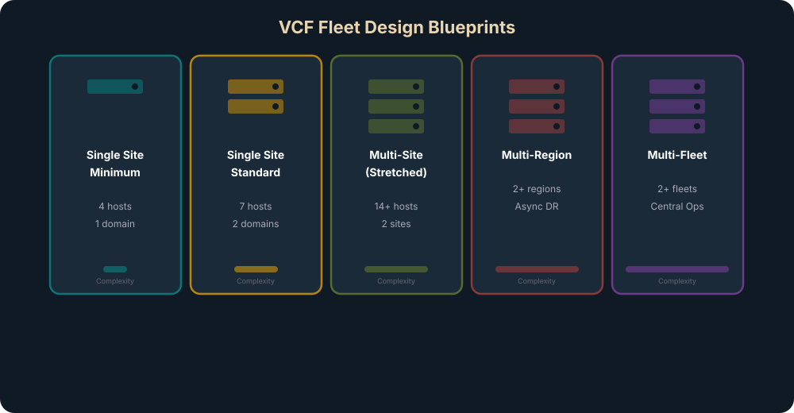
نَماذِج نَشر VCF Operations & Automation
📝 Simple Deployment
VCF Operations: عُقدة واحِدةUniversal Collector: واحِدFleet Manager: واحِدVCF Automation: عُقدة واحِدة + مُوازِن أَحمال مُدمَج- مُناسِب لِلبيئات الصَّغيرة وَ
PoC
💫 High Availability Deployment
VCF Operations:3عُقَد (Primary + Replica + Data)Universal Collector: واحِد أَو أَكثَرFleet Manager: واحِد (لا يَدعَم HA)VCF Automation: عُقَد مُتَعَدِّدة + مُوازِن أَحمال- مَطلوب لِبيئات الإِنتاج
تَصميم النَّسيج الفيزيائي — Network Fabric Design
Layer 2 Fabric
شَبَكة إِيثرنت تَقليديّة. VLANs مُمتَدّة عَبر الرُّفوف. تُستَخدَم STP أَو MLAG لِلرَّوابِط المُتَكَرِّرة. أَبسَط وَلَكِن أَقَلّ قابِليّة لِلتَّوَسُّع.
Layer 3 Fabric — Leaf-Spine
جَميع الرَّوابِط بَين المُبَدِّلات Layer 3. لا حاجة لِـ STP. نِطاقات البَثّ مَحدودة. أَعلى قابِليّة لِلتَّوَسُّع. قَيد: كَتَلة الإِدارة مَحصورة في رَفّ واحِد.
L2-Like Fabric over L3 — Hardware VXLAN
أَفضَل العالَمَين: بنية L3 مَع Hardware VXLAN لِتَوفير اِتِّصال L2 اِفتِراضي. يَحُلّ مُشكِلة الرَّفّ الواحِد. يَحتاج MTU ≥ 9000.
⚠ تَنبيه
عِند استِخدام NSX، الشَّبَكة الفيزيائيّة يَجِب أَن تَدعَم Jumbo Frames (MTU ≥ 9000) وَاِتِّصال IP بَين جَميع الأَجزاء.
نَماذِج المُبَدِّل المُوَزَّع — Distributed Switch Models
| النَّموذَج | عَدَد vDS | عَدَد pNICs | الفَصل | الاستِخدام |
|---|---|---|---|---|
| Single DVS | 1 | 2 | لا فَصل — عَرض نِطاق مُشتَرَك | بيئات صَغيرة |
| Storage Separation | 2 | 4 | فَصل التَّخزين | تَخزين مُكَثَّف |
| Workload Separation | 2 | 4 | فَصل أَحمال العَمَل (NSX) | أَداء الأَحمال |
| Storage + Workload | 3 | 6 | فَصل كامِل (تَخزين + أَحمال) | بيئات كَبيرة |
| Dedicated NSX Edge | 2 | 4 | كَتَلة مُخَصَّصة لِـ Edge Nodes | حَرَكة شَمال-جَنوب |
| vSAN Storage Cluster | 2 | 4 | فَصل تَخزين vSAN المُشتَرَك | Storage Cluster |
نَماذِج شَبَكات مُستَوى الأُسطول — Fleet Networking Models
| النَّموذَج | النَّوع | العَزل | NSX LB | المَد عَبر المَواقِع |
|---|---|---|---|---|
| Shared Management Network | VLAN Port Group | ❌ لا | ❌ | مَد فيزيائي |
| Dedicated Management Network | VLAN Port Group مُنفَصِل | ✅ نَعَم | ❌ | مَد فيزيائي |
| NSX VLAN Segment | NSX VLAN Segment | ✅ نَعَم | ✅ | مَد فيزيائي |
| NSX Overlay Segment | NSX Overlay Segment | ✅ نَعَم | ✅ | NSX Federation |
💡 تَوصية
لِلنَّشر الأَوَّلي استَخدِم Shared Management Network (أَبسَط). لِلإِنتاج مَع DR اِنتَقِل إِلى NSX Overlay Segment كَعَمَليّة Day-2.
تَصميم كَتَلة NSX Edge — NSX Edge Cluster Design
🔧 Host Fault Tolerant
- كَتَلة
Edgeفي رَفّ واحِد - كَتَلة
vSphereمُخَصَّصة لِـEdge Nodes - حِماية مِن فَشَل المُضيف
- أَقَلّ تَكلُفة — بَصمة صَغيرة
💫 Rack Fault Tolerant
- كَتَلة
Edgeمُوَزَّعة عَبر رُفوف - حِماية مِن فَشَل رَفّ كامِل
- يَتَطَلَّب
L2-LikeأَوL2fabric - أَعلى تَوَفُّر — أَكثَر تَعقيداً
السُّحُب الخاصّة الافتِراضيّة والبَوّابة — VPC & Transit Gateway
Virtual Private Cloud (VPC) هُو نِطاق شَبَكة مَعزول يُنشِئُه المُستَأجِر ذاتيّاً. يُوَفِّر عَزل Layer 3 كامِل وَتَوجيه وَجِدار ناري مُستَقِل — بِدون تَدَخُّل فَريق الشَّبَكات.
Distributed Transit Gateway (dTGW) هُو مُوَجِّه مُوَزَّع يَربِط VPCs بِبَعضها وَبِالعالَم الخارِجي. يُقَلِّل الاعتِماد على NSX Edge لِحَرَكة East-West بَين VPCs.
نَماذِج استِهلاك الشَّبَكة — Network Consumption Models
| النَّموذَج | مَن يُنشِئ | العَزل | الاستِخدام |
|---|---|---|---|
| VLAN Backed | مُدير الشَّبَكة | VLAN | تَطبيقات تَقليديّة |
| NSX Segment | مُدير NSX | Overlay | تَطبيقات مَع Micro-segmentation |
| VPC بِدون dTGW | المُستَأجِر (خِدمة ذاتيّة) | VPC | أَحمال عَمَل مَعزولة |
| VPC مَع dTGW | المُستَأجِر (خِدمة ذاتيّة) | VPC + تَوجيه | أَحمال مُتَّصِلة بَين VPCs |
🚨 مَعلومة اِمتِحانيّة
الامتِحان يُمَيِّز بَين نَماذِج DVS بِعَدَد pNICs: Single DVS = 2 pNICs, أَيّ نَموذَج فَصل = 4 pNICs, فَصل كامِل = 6 pNICs.
🧠 اِحفَظ — ثَلاث طَبَقات نَسيج
L2 = VLAN مُمتَدّة + STP | L3 = Leaf-Spine + ECMP | L2-Like/L3 = Hardware VXLAN (أَفضَل العالَمَين)
✅ Knowledge Check — Module 09
Q1. The Single DVS model requires how many pNICs per host?
Correct: B
Single DVS = 1 vDS + 2 pNICs (minimum configuration).
Q2. Full Storage and Workload Separation DVS requires:
Correct: C
Full separation = 3 vDS + 6 pNICs for maximum traffic isolation.
Q3. Which fleet networking model supports NSX Federation for cross-region connectivity?
Correct: D
Only NSX Overlay Segment supports NSX Federation for stretching networks across regions.
Q4. Distributed Transit Gateway (dTGW) reduces NSX Edge dependency for:
Correct: B
dTGW = distributed routing for East-West traffic between VPCs without hairpinning through Edge nodes.
Q5. VCF Single Site Standard deployment requires how many hosts?
Correct: B
Standard = 4 management hosts + 3 workload hosts = 7 total minimum.
Q6. Which fleet blueprint supports Disaster Avoidance with synchronous replication?
Correct: C
Multi-Site with Stretched Clusters = synchronous replication (RTT ≤ 5ms) for disaster avoidance.
تَصميم التَّخزين ونِطاق الإِدارة
تَعَمَّق في نَماذِج تَخزين vSAN، التَّحجيم، أَفضَل المُمارَسات، وَتَصميم Management Domain بِما في ذَلِك أَمن المَعلومات.
🎯 أَهداف هَذا المودِيول
- فَهم نَماذِج التَّخزين المَدعومة في
VCF:vSAN,NFS,FC - التَّمييز بَين نَماذِج
vSAN ESA: HCI, HCI Datastore Sharing, Storage Cluster, Stretched - تَطبيق أَفضَل مُمارَسات تَصميم وَتَحجيم
vSAN - تَصميم نِطاق الإِدارة: Simple vs HA
- فَهم نَماذِج الهُويّة وَالأَمان:
Identity Broker,RBAC
نَماذِج التَّخزين في VCF — Storage Models
vSAN HCI Storage Model
النَّموذَج الكلاسيكي: الحَوسَبة وَالتَّخزين على نَفس المُضيفين. طَبَقة تَخزين واحِدة (Single Tier). أَقراص NVMe Flash. يَدعَم ضَغط، تَشفير، خِدمات المَلَفّات.
vSAN HCI Datastore Sharing Model
مُشارَكة vSAN Datastore مَع كَتَلات حَوسَبة بَحتة لا تَحتوي على أَقراص تَخزين. يُوَسِّع السَّعة الحَوسَبيّة بِدون إِضافة تَخزين.
vSAN Storage Cluster Model
كَتَلة تَخزين مُخَصَّصة تُوَفِّر Datastore لِكَتَلات حَوسَبة مُتَعَدِّدة. فَصل كامِل بَين الحَوسَبة وَالتَّخزين. مِثالي لِلبيئات الكَبيرة.
vSAN Stretched Cluster
كَتَلة مُمتَدّة عَبر مَوقِعَين مَع Witness. نَسخ مُتَزامِن (Synchronous Replication). زَمَن اِستِجابة ≤ 5ms. لِلأَحمال الحَرِجة.
نَماذِج التَّخزين الخارِجي
📁 NFS Storage Model
- بِروتوكول مَلَفّات مُوَزَّع
NFSv3(Principal) أَوNFSv4.1(Supplemental)- يَدعَم
nConnectلِعَرض نِطاق أَعلى Storage DRSلِإِدارة مَجموعاتDatastore
📁 Fibre Channel Storage Model
- بِروتوكول
SCSIعَبرFC Fabric PrincipalأَوSupplemental- أَعلى أَداء لِأَحمال العَمَل الحَسّاسة
- يَعتَمِد على خَدَمات التَّخزين الخارِجي
أَفضَل مُمارَسات تَصميم vSAN
| المَجال | المُتَطَلَّب |
|---|---|
| الحَدّ الأَدنى لِلمُضيفين | 3 مُضيفين لِكُلّ كَتَلة (يُنصَح بِـ 4 لِتَحَمُّل فَشَل مُضيف) |
| الأَقراص | NVMe Flash فَقَط لِـ ESA — لا أَقراص دَوّارة |
| الشَّبَكة | 25 GbE كَحَدّ أَدنى (يُنصَح 100 GbE) — MTU 9000 |
| VMkernel | مَنفَذ vSAN VMkernel مُخَصَّص على كُلّ مُضيف |
| Storage Policy | اِستِخدام SPBM — لا تُغَيِّر السِّياسة الافتِراضيّة بَعد النَّشر |
| Encryption | يُنصَح بِتَفعيل التَّشفير على مُستَوى Cluster أَو Datastore |
| Slack Space | إِبقاء 25-30% مِساحة فارِغة لِعَمَليّات إِعادة البِناء |
⚠ فَخّ شائِع
لا تُحَجِّم vSAN عِند 100% سَعة! يَجِب تَرك 25-30% مِساحة فارِغة (Slack Space) لِعَمَليّات إِعادة البِناء وَالصِّيانة.
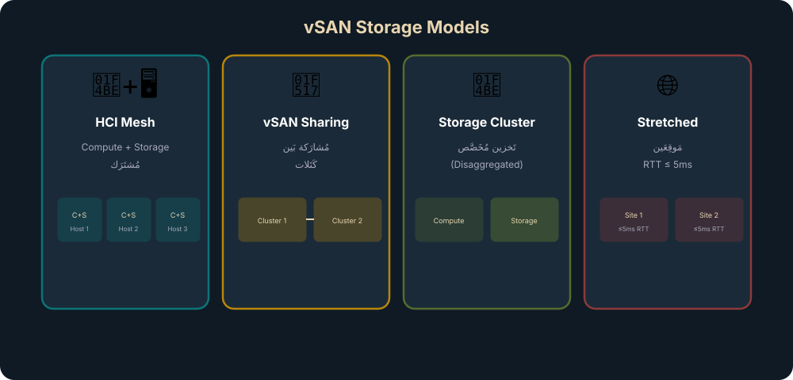
تَصميم نِطاق الإِدارة — Management Domain Design
📝 Simple Mode
- كَتَلة إِدارة واحِدة (4 مُضيفين)
VCF Operations: عُقدة واحِدةVCF Automation: عُقدة واحِدةNSX Manager: عُقدة واحِدة- مُناسِب لِـ
PoCوَبيئات التَّطوير
💫 High Availability Mode
- كَتَلة إِدارة مُوَسَّعة (4+ مُضيفين)
VCF Operations:3عُقَد +LBVCF Automation: عُقَد مُتَعَدِّدة +LBNSX Manager: كَتَلة3عُقَد- مَطلوب لِلإِنتاج
🔑 مُتَطَلَّبات التَّحجيم
تَحجيم نِطاق الإِدارة يَعتَمِد على: عَدَد المَثيلات (Instances)، عَدَد نِطاقات العَمَل، عَدَد المُضيفين الإِجمالي، وَنَموذَج النَّشر (Simple/HA). اِستَخدِم Planning & Preparation Workbook (PnP).
تَصميم الهُويّة وَالأَمان — Identity & Security Design
| النَّموذَج | الوَصف | الاستِخدام |
|---|---|---|
| Embedded Identity Broker | vCenter يَعمَل كَوَسيط هُويّة مُدمَج. يَتَّصِل بِـ Active Directory أَو OpenLDAP |
مَثيل واحِد — أَبسَط إِعداد |
| External Identity Broker | وَسيط هُويّة خارِجي (Okta, ADFS, Azure AD). يَدعَم OIDC/SAML |
مَثيلات مُتَعَدِّدة — مُؤَسَّسات كَبيرة |
إِدارة كَلِمات المُرور وَالحِسابات
- تَدوير كَلِمات المُرور:
VCF Fleet Managementيُدير التَّدوير التِّلقائي لِجَميع حِسابات الخَدَمات - RBAC: أَدوار مُحَدَّدة لِكُلّ مُكَوِّن —
VCF Operations,Automation,NSX,vCenter - أَقَلّ اِمتِياز: مَبدَأ
Least Privilege— كُلّ مُستَخدِم يَحصُل فَقَط على الصَّلاحيّات المَطلوبة
🚨 مَعلومة اِمتِحانيّة
الامتِحان يَسأَل عَن الفَرق بَين vSAN HCI و Storage Cluster: الأَوَّل الحَوسَبة وَالتَّخزين مُشتَرَكان، الثّاني كَتَلة تَخزين مُخَصَّصة تَخدِم كَتَلات حَوسَبة مُنفَصِلة.
🧠 اِحفَظ — نَماذِج vSAN
HCI = حَوسَبة+تَخزين مَعاً | Sharing = مُشارَكة Datastore مَع Compute-Only | Storage Cluster = كَتَلة تَخزين مُخَصَّصة | Stretched = مَوقِعَين + Witness
✅ Knowledge Check — Module 10
Q1. Maximum RTT allowed between vSAN Stretched Cluster sites?
Correct: B
5ms RTT maximum for synchronous replication in stretched clusters.
Q2. Minimum network speed required for vSAN ESA?
Correct: C
25 GbE minimum. 100 GbE recommended for optimal ESA performance.
Q3. Recommended vSAN Slack Space percentage?
Correct: C
25-30% slack for rebuild operations, maintenance, and unexpected growth.
Q4. The difference between vSAN HCI and vSAN Storage Cluster is:
Correct: B
HCI = converged (compute + storage together). Storage Cluster = disaggregated (separate compute and storage).
Q5. EDP Standard in VCF 9 is:
Correct: B
EDP Standard = Enhanced Data Path, the default packet processing mode in VCF 9 DVS for better performance.
Q6. SPBM stands for:
Correct: A
SPBM = Storage Policy-Based Management — declarative storage management via policies.
نِطاق أَحمال العَمَل وَجَودة التَّصميم
صَمِّم نِطاقات أَحمال العَمَل وَطَبِّق مَعايير الجَودة: التَّوَفُّر، الإِدارة، الأَداء، الاستِرداد، والأَمان.
🎯 أَهداف هَذا المودِيول
- تَصميم نِطاقات أَحمال العَمَل: الحَوسَبة، التَّخزين، الشَّبَكات
- فَهم تَخطيط المَوارِد: كَثافة VMs، NUMA، HA Admission Control
- تَطبيق إِطار جَودة التَّصميم
AMPRSبِالتَّفصيل - تَحديد مُتَطَلَّبات التَّوَفُّر، الأَداء، الاِستِعادة، الأَمان لِكُلّ مُكَوِّن
تَصميم نِطاق أَحمال العَمَل — Workload Domain Design
خَيارات الطوبولوجيا
| الطوبولوجيا | المُتَطَلَّبات | المَيزة |
|---|---|---|
| Single-Rack | مُضيفون في رَفّ واحِد — أَبسَط تَصميم | أَقَلّ VLANs — بَصمة صَغيرة |
| Multi-Rack L2 (VXLAN/EVPN) | مُضيفون عَبر رُفوف مَع L2 مُمتَدّ | حِماية على مُستَوى الرَّف |
| Multi-Rack L3 | مُضيفون عَبر رُفوف مَع L3 بَحت | أَعلى عَزل — كُلّ رَفّ VLANs مُستَقِلّة |
تَخطيط الحَوسَبة — Compute Design
| العُنصُر | التَّفاصيل |
|---|---|
| vSAN Ready Nodes | أَجهِزة مُعتَمَدة وَمُختَبَرة مَع VCF. يُنصَح بِاستِخدامها دائِماً |
| VM Density | عَدَد الآلات لِكُلّ مُضيف. يَعتَمِد على: vCPU/pCPU ratio، الذّاكِرة، التَّخزين |
| NUMA | Non-Uniform Memory Access — حاوِل إِبقاء الآلة داخِل عُقدة NUMA واحِدة لِأَفضَل أَداء |
| HA Admission Control | اِحتِفاظ بِمَوارِد كافية لِتَشغيل أَحمال العَمَل عِند فَشَل مُضيف. يُنصَح: N+1 أَو N+2 |
| DRS | مُوازَنة أَحمال تِلقائيّة بَين المُضيفين. يُنصَح بِوَضع Fully Automated |
| EVC | Enhanced vMotion Compatibility — يَسمَح بِـ vMotion بَين أَجيال مُعالِجات مُختَلِفة |
💡 نَصيحة NUMA
القاعِدة الذَّهَبيّة: vCPUs لِلآلة ≤ عَدَد أَنوِية عُقدة NUMA الواحِدة. إِذا تَجاوَز، المُعالِج سَيَصِل لِذاكِرة عُقدة بَعيدة = زَمَن اِستِجابة أَعلى.
جَودة التَّصميم — AMPRS Design Quality Framework
AMPRS = Availability, Manageability, Performance, Recoverability, Security — الإِطار المُستَخدَم لِتَقييم كُلّ قَرار تَصميمي في VCF.
- Simple Blueprint:
vSphere HAلِحِماية المُضيف. أَجهِزة إِدارة بِعُقدة واحِدة - HA Blueprint: تَجَنُّب
SPoF. أَجهِزة إِدارة مُتَعَدِّدة العُقَد. كَتَلات مُمتَدّة عَبرAZs - Consumption Layer:
VCF Automation HAلِاِستِمرار الخِدمة الذّاتيّة - Design Profiles: كُلّ
Blueprintيُحَدِّد خَيارات التَّوَفُّر لِلإِدارة وَأَحمال العَمَل
- Fleet Management: إِدارة مَركَزيّة لِلأُسطول عَبر
VCF Operations - Capacity Management: تَخطيط السَّعة التَّنَبُّئي — تَنبيهات مُسبَقة قَبل نَفاد المَوارِد
- Configuration Drift: كَشف الانحِرافات وَالامتِثال التِّلقائي
- Lifecycle Management: تَحديثات مُنَسَّقة عَبر
SDDC Manager+Fleet Manager - Logging: سِجِلّات مَركَزيّة عَبر
VCF Operations for Logs
| المَجال | التَّحسين |
|---|---|
| DVS | Enhanced Data Path (EDP) Standard — اِفتِراضي في VCF 9. أَداء أَعلى لِلمُعالَجة |
| NIOC | Network I/O Control v3 — حَجز عَرض نِطاق لِكُلّ نَوع حَرَكة (vSAN: High, vMotion: Low) |
| NSX Edge | كَتَلة مُخَصَّصة مَع pNIC مُخَصَّصة لِكُلّ Edge Node |
| NUMA | إِبقاء VMs داخِل عُقدة NUMA واحِدة |
| vSAN | سِياسات التَّخزين: ضَغط، تَكرار، Stripe Width. 25+ GbE |
| الأُسلوب | الآليّة | RPO/RTO |
|---|---|---|
| Disaster Avoidance | Stretched Clusters + Planned Migration | RPO ≈ 0 / RTO دَقائِق |
| Disaster Recovery | Live Recovery DR — Active-Passive أَو Active-Active | RPO مِن 1 دَقيقة |
| Cyber Recovery | Live Cyber Recovery — بيئة مَعزولة (IRE) | حَسَب حَجم البَيانات |
| Backup | نَسخ اِحتِياطي لِمُكَوِّنات الإِدارة + أَحمال العَمَل | RPO حَسَب الجَدوَلة |
| vSAN Data Protection | حِماية بَيانات مُدمَجة في vSAN | حَسَب السِّياسة |
- Identity:
Identity Broker(Embedded أَو External) لِإِدارة الهُويّات المَركَزيّة - Access Control:
RBACلِكُلّ مُكَوِّن +Least Privilege - Network Security:
vDefend DFW(Micro-segmentation) +Gateway Firewall - Encryption:
vSAN Data-at-Rest+Data-in-Transitencryption - Certificate Management: شَهادات مُدارة عَبر
SDDC Manager - Compliance:
VCF Operations Compliance— مَعاييرCIS,STIG,PCI-DSS
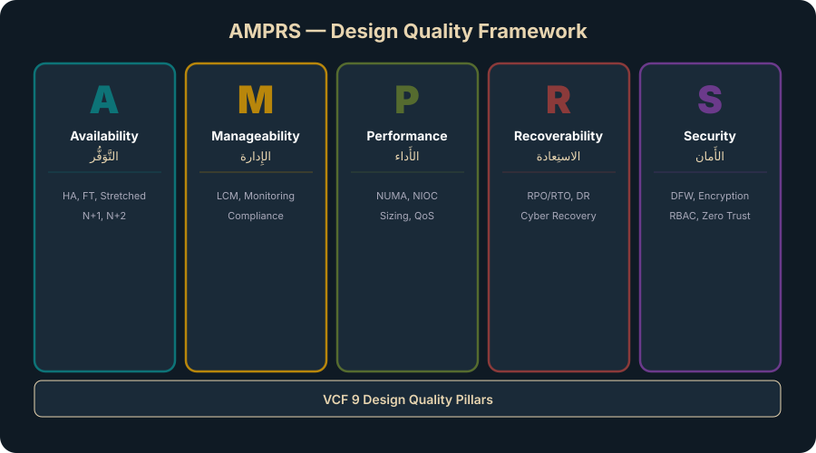
🚨 مَعلومة اِمتِحانيّة
AMPRS هُو القَلب النّابِض لِلامتِحان! كُلّ سُؤال تَصميمي يُمكِن رَبطُه بِأَحَد الأَحرُف الخَمسة. إِذا سُئِلت "لِماذا هَذا القَرار؟" — أَجِب بِالحَرف المُناسِب.
🧠 اِحفَظ — AMPRS
Availability (هَل سَيَبقى يَعمَل؟) → Manageability (هَل يُمكِن إِدارَتُه؟) → Performance (هَل سَيَكون سَريعاً؟) → Recoverability (هَل يُمكِن اِستِعادَتُه؟) → Security (هَل هُو آمِن؟)
✅ Knowledge Check — Module 11
Q1. The letter 'A' in AMPRS stands for:
Correct: C
A = Availability — will the system remain operational?
Q2. Recommended HA Admission Control for production workloads?
Correct: B
N+1 (normal production) or N+2 (mission-critical) to survive host failures.
Q3. Why should VM vCPUs not exceed a single NUMA node's core count?
Correct: B
Crossing NUMA boundaries means the CPU accesses remote memory = higher latency = degraded performance.
Q4. Network I/O Control (NIOC) is used for:
Correct: A
NIOC = bandwidth reservation and QoS for network traffic types sharing the same physical NICs.
Q5. VCF Operations Compliance provides:
Correct: B
VCF Operations Compliance continuously monitors configuration drift against industry security benchmarks.
Q6. N+2 HA Admission Control is recommended for:
Correct: B
N+2 = reserve capacity for 2 host failures, required for mission-critical workloads.
دِراسة حالة: Rainpole Financial Services
طَبِّق كُلّ ما تَعَلَّمته على دِراسة حالة شامِلة — مِن الاكتِشاف إِلى التَّصميم المَنطِقي وَخُطَط العَمَل.
🎯 أَهداف هَذا المودِيول
- تَطبيق مَنهَجيّة
FSAعلى سيناريو حَقيقي (Rainpole Bank) - بِناء الحالة الحاليّة وَتَقييم النُّضج
- تَحليل الفَجَوات وَتَحديد الحالة المُستَهدَفة
- تَصميم حَلّ
VCF 9يُلَبّي مُتَطَلَّبات الأَعمال
مُلَخَّص الشَّرِكة — Rainpole Financial Services
| العُنصُر | التَّفاصيل |
|---|---|
| القِطاع | خَدَمات ماليّة — بُنوك رَقميّة |
| مَراكِز البَيانات | 3: San Jose (HQ)، Salt Lake City، Albany NY |
| الفُروع | 5,500 مَركَز بَنكي + 29,500 صَرّاف آلي + مَراكِز اِتِّصال + بَنك إِلكتروني |
| زَمَن الاِستِجابة | HQ→SLC: 15ms RTT | HQ→Albany: 80ms RTT |
| الشَّبَكة | L3 Spine-Leaf مَع HW VXLAN — MTU 9000 — Dark Fiber |
| المُضيفون | 4×25 Gbps pNIC لِكُلّ مُضيف |
| البيئات الحاليّة | Dev/Test + Production + DMZ — كُلّ بيئة بِـ vCenter مُستَقِل |
| التَّخزين الحالي | FC Block (Dev/Test) — قَديم وَمَحدود | vSAN (ROBO) |
| الامتِثال | PCI-DSS مَطلوب — أَدَوات غَير مُتَّسِقة |
مُتَطَلَّبات الأَعمال — Business Requirements
| الرَّقم | المُتَطَلَّب | الرَّبط بِـ VCF |
|---|---|---|
| BR01 | إِدارة مُوَحَّدة وَأَتمَتة كامِلة لِلدَّورة الحَياتيّة | SDDC Manager + VCF Operations |
| BR02 | مَنصّة تَطوير حَديثة لِتَسريع البَنك الرَّقمي | vSphere Supervisor + Tanzu |
| BR03 | إِطار مُعياري يَدعَم DevOps وَالخِدمة الذّاتيّة | VCF Automation Catalog |
| BR04 | دَمج البيئات في مَنصّة مُوَحَّدة | نِطاقات أَحمال عَمَل مَع عَزل VPC |
| BR05 | هِجرة سَلِسة وَنُمُوّ قابِل لِلتَّوَسُّع | Start Small, Design for Growth |
| BR06 | بنية مُتاحة وَمُرنة لِلتَّطبيقات الحَرِجة | HA + Stretched Clusters + Live Recovery |
تَقييم النُّضج وَتَحليل الفَجَوات
| المَجال | الحالة الحاليّة (CMI) | الحالة المُستَهدَفة | الفَجوة |
|---|---|---|---|
| الرُّؤية والاستِراتيجيّة | 1 — Initial | 3 — Optimized | لا اِستِراتيجيّة سَحابيّة → خارِطة طَريق مُعتَمَدة |
| القِيادة والحَوكَمة | 1 — Initial | 3 — Optimized | بيئات مُنعَزِلة → حَوكَمة مُوَحَّدة |
| الأَفراد والأَدَوات | 1 — Initial | 3 — Optimized | فِرَق تَقليديّة → أَدوار سَحابيّة + تَدريب |
| المُستَهلِكون والخَدَمات | 1 — Initial | 3 — Optimized | تَذاكِر يَدَويّة → كَتالوج خِدمة ذاتيّة |
| البنية التَّحتيّة | 2 — Managed | 4 — Controlled | FC قَديم → vSAN ESA + NSX |
| الأَمان والامتِثال | 1 — Initial | 3 — Optimized | أَدَوات مُتَناثِرة → vDefend + Compliance |
التَّصميم المُقتَرَح — Proposed VCF Design
Fleet Blueprint: Multi-Site Single Region
كَتَلة إِدارة مُمتَدّة بَين San Jose و Salt Lake City (15ms RTT ≤ 5ms — يَحتاج تَحَقُّق). أُسطول واحِد، مَثيل واحِد مَع نِطاقات عَمَل مُتَعَدِّدة.
نِطاق الإِدارة: HA Mode
VCF Operations (3 عُقَد) + VCF Automation (HA) + NSX Manager (كَتَلة). شَبَكة أُسطول على NSX Overlay Segment لِدَعم DR.
نِطاقات أَحمال العَمَل
Production WLD: vSAN ESA HCI + Workload Separation DVS. Dev/Test WLD: vSAN ESA (بَدَل FC القَديم). DMZ WLD: vDefend DFW + GFW.
الشَّبَكة: L2-Like over L3
النَّسيج الحالي (L3 Spine-Leaf + HW VXLAN + MTU 9000) مُتَوافِق تَماماً! VPCs لِعَزل المُستَأجِرين.
الأَمان والامتِثال
vDefend لِلـ Micro-segmentation (مُتَطَلَّب PCI-DSS). Identity Broker مَع AD الحالي. VCF Operations Compliance لِلتَّدقيق.
الحِماية والتَّعافي
Live Recovery DR إِلى Albany (80ms — مُناسِب لِـ Async DR). Live Cyber Recovery لِلحِماية مِن الفِدية (قِطاع مالي = هَدَف رَئيسي).
💡 نَصيحة لِلامتِحان
في الامتِحان سَتَحصُل على سيناريو مُشابِه. الخُطوات: 1) حَدِّد مُتَطَلَّبات الأَعمال → 2) قَيِّم الحالة الحاليّة → 3) حَلِّل الفَجَوات → 4) اِختَر المَخطَّط المُناسِب → 5) طَبِّق AMPRS على كُلّ قَرار.
✅ Knowledge Check — Case Study
Q1. In the Rainpole scenario, the Albany site (80ms RTT) is used for:
Correct: B
80ms RTT far exceeds 5ms limit → cannot use Stretched Clusters → used as async DR site.
Q2. Legacy FC Block storage in Rainpole's Dev/Test environment should be replaced with:
Correct: B
vSAN ESA HCI unifies the platform, simplifies management, and aligns with VCF standard model.
Q3. To meet PCI-DSS requirements for Rainpole, which VCF component provides Micro-segmentation?
Correct: B
vDefend DFW provides VM-level Micro-segmentation — essential for PCI-DSS cardholder data isolation.
نِطاق الدَّورة والمَسار المِهَني
اِفهَم مَكانة هَذِه الدَّورة في مَنظومة شَهادات VMware/Broadcom وَالمَسار المِهَني لِلمِعماري.
🎯 أَهداف هَذا المودِيول
- فَهم مَكانة هَذِه الدَّورة في مَنظومة شَهادات
Broadcom/VMware - التَّعَرُّف على أَدوار المِعماري المُختَلِفة
- تَحديد خُطوات التَّطَوُّر المِهَني بَعد هَذِه الدَّورة
نِطاق الدَّورة — Course Scope
✅ داخِل النِّطاق
- أُطُر العَمَل المِعماريّة (
TOGAF,Zachman) - عَمَليّة التَّصميم (مَفاهيمي → مَنطِقي → فيزيائي)
- رِحلة مِعماري الحالة المُستَقبَليّة
(FSA) - بنية
VCF 9وَمُكَوِّناتها - تَصميم الأُسطول، الشَّبَكات، التَّخزين
- نِطاقات الإِدارة وَأَحمال العَمَل
- جَودة التَّصميم
(AMPRS) - الخِدمات المُتَقَدِّمة وَالتَّراخيص
❌ خارِج النِّطاق
- التَّثبيت والتَّكوين العَمَلي (
Hands-on) - إِدارة التَّشغيل اليَوميّة (
Day-2 Ops) - البَرمَجة وَ
APIبِالتَّفصيل - تَصميم السَّحابة العامّة
- إِدارة المَشاريع
أَدوار المِعماري — Architect Roles
| الدَّور | التَّركيز | العُمق مُقابِل الاِتِّساع |
|---|---|---|
| Enterprise Architect | الاستِراتيجيّة — رَبط IT بِالأَعمال | اِتِّساع عالي، عُمق مُنخَفِض |
| Solution Architect | تَصميم حُلول شامِلة لِمُتَطَلَّبات مُحَدَّدة | تَوازُن بَين العُمق والاِتِّساع |
| Technical/Systems Architect | التَّنفيذ التِّقَني — المُواصَفات الفيزيائيّة | عُمق عالي، اِتِّساع مُنخَفِض |
| Cloud/Infrastructure Architect | تَصميم البنية التَّحتيّة السَّحابيّة الخاصّة/العامّة | عُمق عالي في المَنصّة |
المَسار المِهَني — Career Path
🎓 VCF Architecture (هَذِه الدَّورة)
أَساسيّات التَّصميم المِعماري لِـ VCF 9. تُؤَهِّلك لِامتِحان VCFSA.
📚 تَعَمُّق في المُكَوِّنات
دَورات مُتَخَصِّصة: VCF Networking, VCF Compute, VCF Storage, NSX, vSAN.
🚀 VMware Certified Professional (VCP)
شَهادة مِهَنيّة تُثبِت الكَفاءة في تَصميم وَإِدارة VCF.
⭐ VMware Certified Design Expert (VCDX)
أَعلى شَهادة. دِفاع عَن تَصميم أَمام لَجنة خُبَراء. القِمّة في مَسار المِعماري.
📝 مَلحوظة
بَعد هَذِه الدَّورة، يُنصَح بِحُضور ورشة تَصميم عَمَليّة (Design Workshop) وَالتَّدَرُّب على Planning & Preparation Workbook قَبل الامتِحان.
الامتِحان التَّجريبي — 40 سُؤال
اِضغَط ابدَأ الامتِحان لِبَدء 40 سُؤال في 40 دَقيقة. عَلامة النَّجاح 75% (30/40).
Q1. Which architecture framework uses the Architecture Development Method (ADM)?
Correct: B
TOGAF uses ADM as an iterative cycle for enterprise architecture development.
Q2. Which design phase converts requirements into components and relationships without specifying products?
Correct: B
Logical Design defines components and relationships without specifying products or hardware.
Q3. What is the maximum number of Cloud Maturity Index (CMI) levels?
Correct: C
5 levels: Initial → Managed → Optimized → Controlled → Defined.
Q4. In Conceptual Design, AMPRS is used to evaluate:
Correct: B
AMPRS evaluates design considerations related to requirements, risks, and constraints.
Q5. The correct VCF construct hierarchy (top to bottom) is:
Correct: B
Private Cloud ⊃ Fleet ⊃ Instance ⊃ Domain ⊃ Cluster.
Q6. How many Management Domains exist in each VCF Instance?
Correct: B
One mandatory Management Domain per Instance.
Q7. Which component manages VCF Instance lifecycle (deploy, update, scale)?
Correct: C
SDDC Manager manages Instance lifecycle.
Q8. What is Fleet Manager in VCF 9?
Correct: B
Fleet Manager = formerly Aria Lifecycle. Manages fleet-wide lifecycle.
Q9. Which advanced service provides Micro-segmentation?
Correct: B
vDefend DFW provides VM-level Micro-segmentation.
Q10. NVIDIA NIM Microservices are used for:
Correct: B
NIM Microservices = run AI/LLM inference on private VCF infrastructure.
Q11. Maximum RTT for vSAN Stretched Cluster?
Correct: B
5ms RTT maximum for synchronous replication.
Q12. Single DVS model requires how many pNICs?
Correct: B
Single DVS = 1 vDS + 2 pNICs.
Q13. Which fleet networking model supports NSX Federation?
Correct: D
Only NSX Overlay Segment supports NSX Federation.
Q14. Enhanced Data Path (EDP) Standard is:
Correct: B
EDP Standard = default in VCF 9, improving packet processing performance.
Q15. Recommended vSAN Slack Space?
Correct: C
25-30% for rebuild, maintenance, and growth.
Q16. Difference between vSAN HCI and vSAN Storage Cluster?
Correct: B
HCI = converged. Storage Cluster = disaggregated (separate compute and storage).
Q17. VCF Identity Broker replaces:
Correct: B
Identity Broker = new vCenter function replacing vIDM.
Q18. VCF Operations HA deploys how many nodes?
Correct: C
3 nodes + load balancer = 4 IPs total.
Q19. Which protection method provides RPO ≈ 0 with no downtime?
Correct: C
Stretched Clusters = synchronous replication + planned migration = Disaster Avoidance.
Q20. VMware Live Cyber Recovery is distinguished by:
Correct: B
Behavioral analysis (not signatures) + managed IRE for ransomware recovery.
Q21. The five key challenges of traditional private cloud are:
Correct: B
Operational complexity, slow provisioning, security threats, skills gap, rising costs.
Q22. In the effort/value matrix, which projects should be started first?
Correct: B
Quick Wins build momentum and stakeholder confidence.
Q23. In the OGSM framework, 'M' stands for:
Correct: B
OGSM = Objective, Goal, Strategy, Measure.
Q24. VCF Automation Catalog provides:
Correct: B
VCF Automation Catalog = self-service catalog for end-user consumption.
Q25. Full Storage and Workload Separation DVS requires:
Correct: C
Full separation = 3 vDS + 6 pNICs.
Q26. VCF Operations Compliance manages:
Correct: B
VCF Operations Compliance = drift detection + industry security benchmarks.
Q27. Distributed Transit Gateway (dTGW) reduces Edge dependency for:
Correct: B
dTGW = distributed routing for East-West between VPCs without Edge hairpinning.
Q28. Minimum network speed for vSAN ESA?
Correct: C
25 GbE minimum. 100 GbE recommended.
Q29. The central sizing tool for VCF design is:
Correct: B
PnP Workbook = central document for VCF sizing and design.
Q30. Avi Load Balancer uses which architecture?
Correct: B
Controller (management) + Service Engines (distributed execution).
Q31. Data Services Manager provides:
Correct: B
DSM = DBaaS for PostgreSQL and MySQL.
Q32. Why should VM vCPUs not exceed a single NUMA node's cores?
Correct: B
Crossing NUMA = remote memory access = higher latency = degraded performance.
Q33. VCF Single Site Standard: how many management + workload hosts?
Correct: B
4 management + 3 workload = 7 total.
Q34. 'A' in AMPRS stands for:
Correct: C
A = Availability.
Q35. L3 Fabric with Hardware VXLAN is also called:
Correct: B
L2-Like Fabric over L3 = L3 underlay with HW VXLAN for virtual L2 connectivity.
Q36. ValueOps helps organizations with:
Correct: B
ValueOps = transformation management: OKRs, portfolio management, executive visibility.
Q37. Recommended HA Admission Control for production?
Correct: B
N+1 (normal) or N+2 (critical) for production environments.
Q38. Zachman Framework organizes architecture as:
Correct: B
Zachman = 6×6 classification matrix: perspectives × dimensions.
Q39. In the Rainpole scenario, Albany (80ms RTT) is used for:
Correct: B
80ms >> 5ms → cannot do Stretched Cluster → async DR site.
Q40. The first step in the Future State Architect (FSA) journey is:
Correct: B
Discovery = starting point: understand business, technology, people, and processes.
وَرَقة مَرجَعيّة سَريعة — VCF 9.0 Architecture
🏗 البنية الهَرَميّة
| المُستَوى | المُكَوِّن | المَلحوظة |
|---|---|---|
| Private Cloud | كامِل البيئة | أُسطول أَو أَكثَر |
| Fleet | VCF Ops + Automation | إِدارة مَركَزيّة |
| Instance | SDDC Manager | Mgmt Domain + WLDs |
| Domain | vCenter + NSX | Management أَو Workload |
| Cluster | ESXi Hosts | أَصغَر وَحدة نَشر |
🔢 أَرقام مِفتاحيّة
| العُنصُر | القيمة |
|---|---|
| Stretched Cluster max RTT | 5ms |
| Single Site Standard — مُضيفون | 7 (4 mgmt + 3 wld) |
| Single Site Standard — VLANs | 13 |
| vSAN ESA min network | 25 GbE (يُنصَح 100 GbE) |
| vSAN Slack Space | 25-30% |
| VCF Ops HA nodes | 3 (Primary+Replica+Data) + LB |
| MTU لِـ NSX | ≥ 9000 |
| CMI Levels | 5 (Initial → Defined) |
🔌 نَماذِج DVS
| النَّموذَج | vDS | pNICs |
|---|---|---|
| Single DVS | 1 | 2 |
| Storage Separation | 2 | 4 |
| Workload Separation | 2 | 4 |
| Storage + Workload | 3 | 6 |
| Dedicated NSX Edge | 2 | 4 |
🛠 رَبط المُكَوِّنات
| القُدرة | المُكَوِّن |
|---|---|
| دَورة الحَياة (Instance) | SDDC Manager |
| دَورة الحَياة (Fleet) | Fleet Manager |
| المُراقَبة المُوَحَّدة | VCF Operations |
| كَتالوج الخِدمة الذّاتيّة | VCF Automation Catalog |
| الهُويّة المَركَزيّة | VCF Identity Broker (في vCenter) |
| الامتِثال | VCF Operations Compliance |
| Micro-segmentation | vDefend DFW |
| مُوازَنة الأَحمال | Avi Load Balancer |
| DBaaS | Data Services Manager |
| Private AI | NVIDIA NIM Microservices |
| Ransomware Recovery | Live Cyber Recovery (IRE) |
| DR | Live Recovery DR |
| تَعَدُّد المُستَأجِرين | VPCs + dTGW |
🎯 AMPRS — جَودة التَّصميم
| الحَرف | المَعنى | السُّؤال |
|---|---|---|
| A | Availability | هَل سَيَبقى يَعمَل؟ |
| M | Manageability | هَل يُمكِن إِدارَتُه؟ |
| P | Performance | هَل سَيَكون سَريعاً؟ |
| R | Recoverability | هَل يُمكِن اِستِعادَتُه؟ |
| S | Security | هَل هُو آمِن؟ |
📚 الأُطُر والمَنهَجيّات
| الإِطار | الخاصِيّة المُمَيِّزة |
|---|---|
TOGAF | دَورة ADM تَكراريّة |
Zachman | مَصفوفة 6×6 تَصنيفيّة |
OGSM | Objective → Goal → Strategy → Measure |
FSA Journey | Discovery → Assessment → Target → Workstreams |
CMI | 5 مُستَوَيات: Initial → Defined |
قاموس المُصطَلَحات
| المُصطَلَح | الاِختِصار | التَّعريف |
|---|---|---|
| Architecture Development Method | ADM | مَنهَجيّة TOGAF التَّكراريّة لِتَطوير المِعماريّة |
| Availability, Manageability, Performance, Recoverability, Security | AMPRS | إِطار تَقييم جَودة التَّصميم في VCF |
| Cloud Maturity Index | CMI | مُؤَشِّر نُضج السَّحابة — 5 مُستَوَيات |
| Data Services Manager | DSM | قَواعِد بَيانات كَخِدمة (DBaaS) على VCF |
| Distributed Firewall | DFW | جِدار ناري مُوَزَّع على مُستَوى الآلة — Micro-segmentation |
| Distributed Resource Scheduler | DRS | مُوازَنة أَحمال تِلقائيّة بَين المُضيفين |
| Distributed Transit Gateway | dTGW | مُوَجِّه مُوَزَّع يَربِط VPCs |
| Enhanced Data Path | EDP | وَضع مُعالَجة حُزَم مُحَسَّن في VCF 9 DVS |
| Enhanced vMotion Compatibility | EVC | تَوافُق vMotion بَين أَجيال مُعالِجات مُختَلِفة |
| Express Storage Architecture | ESA | بنية تَخزين vSAN الحَديثة — NVMe فَقَط |
| Fleet Manager | FM | إِدارة دَورة حَياة الأُسطول (سابِقاً Aria Lifecycle) |
| Future State Architect | FSA | مِعماري الحالة المُستَقبَليّة — رِحلة التَّحَوُّل |
| Gateway Firewall | GFW | جِدار ناري على حَدّ الشَّبَكة — North-South |
| High Availability | HA | تَوَفُّر عالي — إِعادة تَشغيل تِلقائيّة عِند فَشَل المُضيف |
| Hyper-Converged Infrastructure | HCI | حَوسَبة + تَخزين + شَبَكات في مَنصّة واحِدة |
| Identity Broker | IDB | وَسيط هُويّة مَركَزي في vCenter (بَديل vIDM) |
| Isolated Recovery Environment | IRE | بيئة مَعزولة لِلتَّعافي مِن الفِدية |
| Key Performance Indicator | KPI | مُؤَشِّر أَداء كَمّي لِقِياس النَّتائِج |
| Lifecycle Management | LCM | إِدارة دَورة الحَياة: نَشر، تَحديث، تَوسيع |
| Network I/O Control | NIOC | حَجز عَرض نِطاق لِأَنواع حَرَكة المُرور |
| Non-Uniform Memory Access | NUMA | بنية ذاكِرة المُعالِج — الأَداء يَعتَمِد على قُرب الذّاكِرة |
| Objectives, Goals, Strategies, Measures | OGSM | إِطار تَخطيط اِستِراتيجي |
| Objectives and Key Results | OKR | أَهداف طَموحة مَع نَتائِج قابِلة لِلقِياس |
| Planning and Preparation Workbook | PnP | وَثيقة التَّحجيم المَركَزيّة لِتَصميم VCF |
| Recovery Point Objective | RPO | أَقصى فُقدان بَيانات مَقبول |
| Recovery Time Objective | RTO | أَقصى وَقت تَوَقُّف مَقبول |
| Role-Based Access Control | RBAC | تَحَكُّم بِالوُصول حَسَب الأَدوار |
| Software-Defined Data Center | SDDC | مَركَز بَيانات مُعَرَّف بِالبَرمَجيّات |
| Storage Policy-Based Management | SPBM | إِدارة التَّخزين بِالسِّياسات |
| The Open Group Architecture Framework | TOGAF | إِطار مِعماري مَفتوح مَع دَورة ADM |
| Virtual Private Cloud | VPC | نِطاق شَبَكة مَعزول — خِدمة ذاتيّة لِلمُستَأجِر |
| VMware Cloud Foundation | VCF | مَنصّة السَّحابة الخاصّة المُتَكامِلة مِن Broadcom |
| vSAN Data Protection | vSAN DP | حِماية بَيانات مُدمَجة في vSAN |